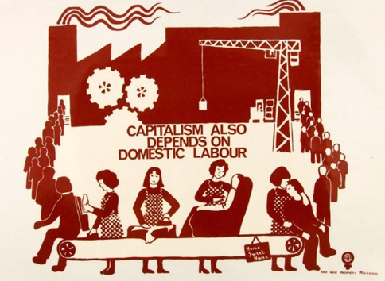

Capítulo 8
Hacia una agenda de la historia de la teoría de la organización desde un abordaje latinoamericano, crítico, histórico y con perspectiva de género
Diego Szlechter, Gustavo Gibert, Santiago Iorio, Evangelina Caravaca, Natalia Bauni, Romina Berman y Roxana Sánchez
En este capítulo abordaremos la historia misma de la teoría de la organización como objeto de análisis. Para ello tomaremos los aportes críticos de Ibarra Colado. El recorrido del texto se nutre, además, de otras contribuciones fundamentales para enriquecer la reflexión y complejizar el análisis. Por un lado, revisamos los aportes de Martínez Nogueira para pensar cómo incidieron sobre la teoría de la organización los paradigmas y debates filosóficos de más largo alcance, en particular, en torno al concepto de “razón”. Por otra parte, recuperamos la contribución de Deleuze acerca del pasaje de la sociedad disciplinaria a la sociedad de control, así como la relación de cada uno de estos contextos con formatos organizacionales específicos. Por último, incluimos referencias a producciones académicas que analizan el impacto de la variable de género en las relaciones y dinámicas que tienen lugar dentro (y fuera) de las organizaciones.
La emergencia de la crítica: la teoría de la organización como objeto de análisis
En este capítulo final nos proponemos abordar la historia de la teoría de la organización. Hasta aquí, en los capítulos anteriores, fuimos ocupándonos de las etapas, enfoques y contextos sociales específicos en los que esta se fue desarrollando. Para analizar distintas dimensiones organizacionales, en cada unidad hicimos una especie de zoom sobre una u otra corriente de pensamiento organizacional, con énfasis en los diferentes ejes que problematizaron sus principales referentes. Nos detuvimos siempre en las particularidades de cada momento histórico y de cada lugar donde surgieron dichos aportes teóricos, en los conflictos y consecuencias sociales que estaban en juego y atravesaban la reflexión sobre las organizaciones.
Así, cuando trabajamos sobre los inicios del pensamiento organizacional, sobre los aportes de Taylor, Ford y Fayol, hablamos de los nuevos diseños organizacionales para incrementar la productividad y hacer más eficientes los sistemas de administración. Pero también abordamos las tensiones que esto representó en el mundo del trabajo, la disputa entre empresarios y obreros de oficio por el control de los tiempos de producción, los obstáculos que representaba para los empresarios ingleses y estadounidenses de fines del siglo xix y principios del xx la posesión del saber-hacer productivo por parte los gremios de obreros-artesanos, y las consecuencias de la implementación de las innovaciones organizacionales sobre estos conflictos. Lo mismo hicimos al abordar como objeto de análisis a la burocracia, los aportes de la doctrina de las relaciones humanas, la teoría general de los sistemas, los modelos posfordistas, etcétera. Nos preguntamos, una y otra vez, qué estaba en juego en el terreno de las organizaciones concretas en los países en los que se desarrollaron los diferentes aportes teóricos. Observamos, también, las particularidades de la introducción de los enfoques teóricos y de gestión organizacional en la Argentina.
|
Desnaturalizar El ejercicio de desnaturalizar teorías, procesos históricos o nociones del sentido común tiene como objetivo interrogarnos por los procesos sociales que dieron origen a aquello que analizamos, y en los que, muchas veces, están en juego viejas disputas entre actores sociales con intereses contrapuestos. Por esto, desnaturalizar es como “sacarle el velo” a aquello que se consolidó por algún tiempo como verdad indiscutida, que se pretende objetiva, para contextualizarla y explicarla en la medida que es una construcción social, es decir, “no natural”. |
Ahora nos proponemos hacer un zoom inverso, alejando el foco de las corrientes de pensamiento y sus dimensiones específicas, para mirar a la teoría de la organización y su desarrollo histórico en general, como un todo, convirtiéndolo en nuestro objeto de análisis para este último capítulo. Para esto, vamos a valernos nuevamente de los aportes de Ibarra Colado (1991), quien nos ayudará a recorrer la historia de este campo de estudio –recordemos, la “teoría de la organización”, ¡de esto se trata!– en un solo texto. Pero, ¿qué perspectiva tiene Ibarra Colado? Si el objeto de análisis es la temática misma, la teoría de la organización, y vamos a usar a un autor en particular para reflexionar sobre ella, tenemos que saber cuál su punto de vista, desde dónde parte y a dónde quiere llegar con su análisis. En definitiva, dónde queremos situarnos al tomar a este autor como guía para nuestro análisis.
Ibarra Colado parte de una crítica que no debe ser confundida con una queja. Tener una mirada o perspectiva crítica implica desnaturalizar lo establecido como “normal” y como “verdad”. En este sentido, para el autor desnaturalizar es desmitificar. ¿Qué significa? Significa hacer un esfuerzo para tratar de encontrar qué se esconde por detrás de lo que Ibarra Colado suele llamar “teoría clásica de la organización”, que fue muy poco cuestionada hasta la década del setenta. El autor utiliza el siguiente concepto:
Teoría de la Organización para el conjunto de orientaciones teóricas desarrolladas a lo largo del último siglo que, independientemente de su enfoque y del nivel de análisis que asumen, se presentan como tentativas explicativas del fenómeno organizacional o de algunos de sus aspectos relevantes (1991: 29).
Esta es la tesis central del autor, a partir de la que va a proponer una forma de cuestionarla, pero no desde la mirada del centro del poder mundial, no desde la perspectiva clásica y ortodoxa, sino a partir de una mirada latinoamericana, desde la periferia del poder mundial.
|
Mirar desde la “periferia” La noción de “periferia” se refiere a la posición que la mayoría de los países tienen en la división internacional del trabajo, respecto a un puñado de naciones que conforman los centros de poder. Los países de América Latina, y también la mayor parte de los de Asia y África, se insertan en el mercado mundial como proveedores de materias primas debido a su bajo nivel de industrialización. Mientras, otros países son los principales compradores de esos productos primarios y, gracias a que cuentan con los conocimientos, tecnologías y capitales necesarios, pueden elaborarlos y volver a venderlos en el mercado mundial. Los primeros se convierten así en sus principales compradores de productos con alto agregado de valor, bajo una relación de “dependencia”. El primer conjunto de países, con menor grado de desarrollo económico, son considerados como periféricos, mientras que los segundos son pensados como países centrales. Así, la idea de centro/periferia elaborada por Comisión Económica para América Latina (cepal) en la década del cincuenta, ilustra las condiciones asimétricas en que se dan los vínculos entre los países más y menos poderosos, las distintas condiciones sociales y económicas de cada grupo, entre las que no debemos olvidar el desigual poder militar como factor fundamental de dicha relación. |
Esta mirada coincide, en alguna medida, con la de Martínez Nogueira (1995), que reflexiona sobre la evolución de la teoría de la organización y su relación con el paradigma racionalista. Según este autor argentino, la teoría de la organización nació a principios del siglo xx bajo el imperativo de la racionalidad instrumental, como un instrumento diseñado para coordinar la acción humana que había sido fragmentada por la división del trabajo. El pensamiento organizacional emerge con una misión: recomponer, coordinar racionalmente, aquello que fue descompuesto. Así, el pensamiento organizacional se inicia con una fe plena en la capacidad de la razón humana para descubrir y diseñar “la mejor forma de organizar” la acción humana. En este sentido, es fuertemente tributaria de principios filosóficos basales de la Era Moderna. El postulado “pienso, luego existo” de Descartes (2004), que escribió en el siglo xvii, resuena en la máxima de la teoría organizacional acerca de la necesidad de separar el trabajo intelectual del trabajo manual. Según los principios taylorianos, primero se debe planificar y luego actuar, ambas cuestiones deben estar separadas. Sobre este núcleo duro de la fe en la razón, se han desplegado distintos “edificios” de pensamiento organizacional, con ciertos matices, pero sin cuestionar el trasfondo del análisis y del diseño organizacional.
Esto fue así hasta bien entrados los años sesenta: cuando en el terreno filosófico –y a la luz de una fuerte conflictividad social en los países capitalistas occidentales– empezó a sospecharse de la capacidad de la razón humana para conocer y organizar el mundo, también empezaron a tambalear los “edificios” del pensamiento organizacional, ya que se cuestionaron los pilares paradigmáticos sobre los que se había construido la teoría. Los sesenta son los años del Mayo francés, de la consolidación de la Revolución cubana, de la derrota estadounidense en la Guerra de Vietnam, del Cordobazo en nuestro país, la rebelión popular contra la dictadura de Onganía (1966-1970) que tuvo como protagonistas a trabajadores, trabajadoras y estudiantes. Años en los que las formas organizativas diseñadas bajo principios de racionalidad plena, los Estados y también las grandes empresas de los países centrales experimentan serias dificultades. Pero hasta este entonces, la teoría de la organización no había sido cuestionada.
Vamos a partir de los aportes de estos dos autores, ambos latinoamericanos, e intentaremos revisar críticamente la teoría de la organización.
La teoría de la organización desde América Latina
Desde un primer momento hemos dejado claro que un propósito central de nuestro libro es contextualizar los debates que se dan en otros lugares, los que, a veces, no tienen que ver mucho con la historia argentina y latinoamericana, por lo que hay que tener mucho cuidado con incorporarlos de manera automática a nuestra realidad. Contextualizar los debates de ideas supone observar sociedades y los conflictos que en ellas se dan en el momento histórico en que se producen dichas discusiones. Por otro lado, también es importante hacer consciente que no estamos observando nuestro propio país, sino sociedades que tienen una historia socioeconómica muy diferente a la nuestra y a las demás de América Latina. Es decir, para contextualizar el desarrollo de la teoría también tenemos que contextualizar nuestra propia mirada, desde dónde analizamos. Por último, como la teoría de la organización se irradió rápidamente en todo el mundo capitalista, es necesario observar con cuidado de qué manera específica impactó en nuestra sociedad, argentina y latinoamericana. Veamos un ejemplo.
Si nosotros leemos a Taylor (1994), un autor estadounidense de principios del siglo xx, es porque la historia de la teoría de la organización incluye su perspectiva y le da un lugar importante. Pero si no nos quedamos solo con ello, con el lugar que le otorga la teoría, podemos analizar los textos de Taylor como un aporte particular –no universal– a los debates que se estaban dando en la sociedad estadounidense desde dónde y para quién escribía este autor. Por otro lado, es importante situarnos como lectores de Taylor, ya que no lo leemos desde las ciudades estadounidenses de Harvard o Washington, sino desde la Argentina, que es un contexto muy diferente al que dio origen a la teoría de la organización. Al mismo tiempo, hay que reconocer que la Argentina tuvo una determinada inserción en la división internacional del trabajo, en la que ocupó una posición muy subordinada como proveedora de materias primas. Eso tiene una influencia determinante para poder entender de qué manera se incorporaron el taylorismo y el fordismo en la Argentina, ya que en nuestro país no se comenzó a fabricar autos en el mismo momento que sí sucedía en Estados Unidos o en algunos países de Europa.51 Es por todo esto que necesitamos contextualizar permanentemente. Y cuando se contextualiza, al mismo tiempo, se está historizando, las dos dimensiones se dan a la vez. Esa lógica es la que atraviesa todo el libro, contextualizamos e historizamos –una y otra vez– cada uno de los postulados de las escuelas del pensamiento organizacional.
Sobre esta base, podemos hacernos un conjunto de preguntas, que son fundamentales para este capítulo:
· ¿Qué pasaba en el mundo, en los países centrales y en la periferia, mientras se desarrollaba la teoría de la organización?
· ¿Podemos aceptar desde la periferia el traslado de los paradigmas que se dieron especialmente en los Estados Unidos y en el norte de Europa? ¿En qué medida es posible trasladar esos paradigmas si tenemos en cuenta las diferencias entre cada contexto en el que se inscriben las organizaciones concretas que pretendemos analizar, en la posición subordinada de Latinoamérica respecto del mundo desarrollado, en la heterogeneidad de las economías latinoamericanas?
· Si bien hay sectores de la producción en Latinoamérica muy modernizados en términos económicos, hay también sectores muy subdesarrollados. Entonces, ¿en qué sentido es posible y en qué medida es deseable trasladar la misma teoría surgida en las potencias mundiales a nuestras sociedades? Son dos preguntas distintas, porque quizá es posible, pero si nosotros nos preguntamos en qué medida es deseable, nos estamos preguntando si es pertinente, si sirve, si nos da herramientas para el análisis de nuestras sociedades y sus organizaciones.
· Entonces, podríamos también preguntarnos: ¿y por qué no creamos una teoría de la organización que nazca de nuestras propias necesidades, de nuestro propio contexto?
Avancemos entonces, sin olvidar a cada paso estas preguntas, y otras que se nos ocurran, para interpelar a la teoría de la organización desde nuestras realidades latinoamericanas.
Desnaturalizando lo obvio, hacia una mirada crítica de la teoría
de la organización
La necesidad de crear una teoría de la organización latinoamericana implica definirla en términos contextuales y en esto ya incluimos una perspectiva crítica, ya que estamos desnaturalizando el one best way que inauguró Taylor. Toda etapa en el derrotero de la teoría de la organización se presentó como la nueva y única mejor manera de hacer las cosas. Así se constituyó el taylorismo, el fordismo, la escuela de relaciones humanas y todas las teorías de la motivación. Cuando Maslow (1991) imaginó su teoría de la motivación a través de la famosa pirámide de satisfacción de necesidades, la pensó para todo tipo de organización, para cualquier país, es decir, una teoría universal de la motivación, ya que hay necesidades que, según el autor, son básicas y universales, presentándolas de manera totalmente descontextualizadas. En cambio, si pretendemos analizar a la teoría contextualizando su desarrollo, quiere decir que sospechamos que los problemas de la sociedad en la que surgió incidieron sobre sus principales postulados. Es decir, si se hubiera desarrollado en otra sociedad que hubiese tenido otros problemas, sus postulados serían diferentes.
|
Ideas legítimas y su contexto El sociólogo alemán Max Weber usó el concepto de “legitimidad” para explicar cómo una manera de hacer las cosas y, específicamente, de “dominar” un grupo a otro es reconocida y aceptada por un conjunto de personas como válida, sin necesidad de mediar el uso de la fuerza, de la coerción. Las ideas legítimas son, entonces, aquellas que son aceptadas como válidas por una sociedad en un contexto social e histórico particular. |
En síntesis, la teoría de la organización siempre intentó buscar una esencia, una naturaleza del orden social. Al intentar forjar una forma científica de organización del trabajo, partió de la premisa de que el trabajador es perezoso por naturaleza. Cuando creyó encontrar una esencia, inmediatamente trató de universalizarla al conjunto de las sociedades, más allá de las características particulares de cada una. En efecto, lo más cuestionable de esa búsqueda de la esencia de la “cultura organizacional” o del “buen trabajador” es que son construcciones sociales inmersas en relaciones de poder que varían en según el contexto en que se den. En cada lugar y momento histórico hay coaliciones de poder que luchan por legitimar estos postulados: el que logre hacer prevalecer esas ideas y convertirlas en ideas legítimas, es decir, en “normales” y con un cierto estatus de verdad, podrá hacerlas valer en el terreno práctico de luchas de poder concreto.
Cuando Taylor postula que a través del estudio de tiempos y movimientos se puede llegar “científicamente” a encontrar la mejor manera de hacer las cosas –el one best way– le intenta “arrebatar” el poder a los gremios artesanos que, en el terreno práctico, eran quienes dominaban la mejor manera de hacer las cosas. En efecto, Taylor logró imponer su idea y que fuera incorporada por la mayor parte de la sociedad. Dividir el trabajo al máximo y cronometrar el tiempo se convirtió en la manera de producir aceptada como óptima, es decir, se legitimó dado que la mayor parte de la sociedad estadounidense la aceptó.
Pero, cuando las ideas se convierten en ideas legítimas, automáticamente hay otro tipo de ideas que se convierten en desviadas, ilegítimas o consideradas “anormales”. Entonces, esa es la cuestión: lo que queda aceptado como válido y lo que aparece como inválido para entender y hacer, analizar y gestionar, en materia organizacional. Mientras que la manera de hacer propuesta por Taylor se aceptó como la mejor y única, la manera de hacer artesanal fue identificada como maliciosa y objetable en todas sus dimensiones.
La tesis central de Ibarra Colado en el texto de 1991 es un tanto redundante respecto a las del texto de Ibarra Colado y Montaño Hirose de 1987, que abordamos en el capítulo 4 y que trata acerca de la escuela de relaciones humanas. Al intentar desnaturalizar y desmitificar dicha escuela, los autores proponen la tesis de la complementariedad teórica, cuyo contrapunto es la de los rompimientos paradigmáticos. Mientras que habitualmente se habla de la historia del pensamiento organizacional como un conjunto de etapas disruptivas entre sí, Ibarra Colado nos va a señalar que ninguna nueva teoría organizacional –hasta ahora– vino a romper con su antecesora, sino que se acopló, tomó ideas de ella y reforzó ciertos puntos que la otra teoría no tuvo en cuenta. En este sentido, cuando Elton Mayo (1993) presenta los postulados de la escuela de relaciones humanas, lo hace como una nueva forma para mejorar la productividad en las fábricas. No obstante –y llamativamente–, Mayo se muestra rompiendo paradigmáticamente con Taylor. Sin embargo, la tesis de la complementariedad teórica nos va a decir que esto no es tan así, ya que se está montando sobre las viejas ideas del taylorismo, no hay mucho de nuevo. Hay solo algo de nuevo, porque hay complementariedad; esto es bastante diferente a decir que hay una ruptura entre una y otra escuela ¿En qué sentido?
Si recordamos el planteo de que la productividad es función de la habilidad, en este sentido Taylor y Mayo son muy parecidos. Para Taylor, la habilidad es física exclusivamente y para Mayo la habilidad es social. O sea, Taylor trataba de manipular la fuerza física del trabajador, en cambio Mayo trataba de manipular las habilidades sociales. Ambos tenían el mismo fin: incrementar la productividad, a través del mayor rendimiento del trabajo y el control sobre
los/as operarios/as.. Sin embargo, esto es ocultado por Mayo, presentándose como un humanizador, como un “justiciero”, así como también pretendió mostrarse Taylor.52
Entonces, podemos preguntarnos sobre la complementariedad entre corrientes de pensamiento en el terreno de la gestión organizacional y la producción concreta. ¿Cómo un conjunto de ideas es aplicado en una parte de los procesos productivos, mientras que otro conjunto de ideas –presentado generalmente como opuesto– es aplicado en otra parte complementaria del mismo proceso y en el mismo momento histórico? Aquí las ideas de la teoría de la organización aparecen más como una “caja de herramientas” abstractas para aplicar a distintas situaciones concretas, no como verdaderas preocupaciones teóricas sobre cómo entender el fenómeno organizacional.
Una teoría crítica implicaría distinguir, o por lo menos estar atentos a sospechar, entre las herramientas para la gestión y las explicaciones sistemáticas del fenómeno organizacional propiamente dicho.
El contexto, el poder y las organizaciones
Según Ibarra Colado, y si asumimos como válido lo dicho hasta aquí, no podemos describir la historia de la teoría de la organización si no la vinculamos con la historia del capitalismo. En efecto, podemos decir que la historia de la teoría de la organización es la historia del capitalismo, aunque esto no se ve a las claras en una primera mirada. ¿Por qué? Porque uno de los vicios que tuvo –y tiene– la teoría de la organización más clásica y ortodoxa, que surgió en los países económicamente más desarrollados, fue siempre su mirada endógena, su mirada hacia adentro, su desvinculación con los procesos sociales más amplios. Por ejemplo, cuando la teoría clásica de la organización nos hablaba de “cultura”, se refería a la cultura organizacional. Todas las teorías del cambio vinculadas eran teorías del cambio cultural en el interior de las organizaciones, pero no daban cuenta de procesos culturales que tienen lugar por fuera de la organización. No nos hablaban de los procesos culturales que atraviesan a las personas y grupos de personas concretas que forman a las organizaciones en cada momento histórico.
¿Las subculturas organizacionales, los estilos de vida de los trabajadores y trabajadoras más y menos calificados, de los gerentes, etcétera, están vinculadas con una cultura macro organizacional? ¿Las tradiciones y los puntos de vista de los sujetos que habitan las organizaciones están vinculados con culturas más amplias que trascienden las fronteras de nuestro objeto de estudio, es decir, las organizaciones? Por ejemplo, ¿en qué medida la construcción de las jerarquías en las organizaciones está o no vinculada con la forma en que se construye la desigualdad social por fuera de la organización? Toda jerarquía incluye criterios para legitimar las condiciones sociales y la organización necesita legitimar las razones por las que alguien está arriba y otro está abajo, es decir, necesita tener alguna teoría de justicia en la que la sociedad pueda creer. Esas teorías, ¿surgen en el interior de la organización o tienen que ver con procesos más globales de las propias sociedades? Volvamos a Taylor, cuando dice que los trabajadores son por naturaleza holgazanes, ¿está hablando de la organización o está postulando una visión sobre el conjunto de los trabajadores para luego, desde allí, justificar que dentro de la organización haya quienes manden y planifiquen, y otros sean mandados y ejecuten tareas muy poco interesantes y repetitivas?
Ibarra Colado nos dice, entonces, que la teoría clásica de la organización no le prestó demasiada atención a estas cuestiones de la vinculación con lo que pasa afuera, en la sociedad. Siempre se miró el ombligo, incluso cuando hablaba de la relación entre la organización y el contexto, en el marco de análisis de la
mirada ecológica dentro de la teoría de los sistemas. ¿Cuál era el objetivo de
la teoría de los sistemas, el objetivo central? La búsqueda del equilibrio. Cuando la
teoría de los sistemas propone mirar afuera es con el objetivo de mantener el equilibrio interno. Esto es, nos quieren hacer creer que “ahora miramos hacia fuera”, y de hecho lo hacen. ¿Pero para qué la teoría de los sistemas se esforzó por mirar hacia afuera, hacia el contexto de las organizaciones? Solo para mantener el equilibrio interno.
En cambio, Ibarra Colado nos dice: “¡Salgamos de la organización!, miremos para afuera de verdad”. Así, nos convoca a observar dos cosas. Por un lado, ¿cuáles son los rasgos sociales que hay en el interior de las organizaciones?, ¿en qué medida las formas en que se construyen y se legitiman las desigualdades en el exterior de las organizaciones están presentes en el interior de ellas? Y, por otro lado, ¿en qué medida hay rasgos sociales que provienen del interior de las organizaciones? ¿En qué medida hay rasgos organizacionales que se construyen en el interior de las organizaciones y que luego impactan en la sociedad?
Estos interrogantes nos hablan de que podemos tener ante nosotros un objeto de estudio, la organización, de gran relevancia para nuestras sociedades. Y por esto, debemos tener cuidado con lo que hacemos con él cuando lo diseñamos y gestionamos. En este sentido, es probable que si diseñamos procesos de producción que requieran la sumisión de unas personas a otras, estemos contribuyendo a que en nuestra sociedad se gesten o consoliden relaciones inequitativas.
En esta línea, es interesante preguntarse sobre la manera en que se construye el poder, la manera en que emerge el conflicto en el interior de las organizaciones y en qué medida está vinculado con la manera en que el conflicto emerge por fuera de ellas. Ibarra Colado nos va a decir que cuando hablamos de teoría de la organización necesitamos vincularla con la historia del desarrollo capitalista, para ver cuáles son los vasos comunicantes para un lado y para el otro, cómo se influyen mutuamente. Esto es fundamental, la mirada crítica parte de esta visión, no podemos hablar de la historia de la teoría de la organización como algo totalmente neutral y objetivo por fuera del capitalismo. Sería aislar a la teoría de la propia realidad en la que se desarrolla y a la que sirve. La paradoja es que la visión clásica, ortodoxa, hace esto, tiende una y otra vez a desconectar a la teoría de las realidades concretas al plantear postulados universales. ¿Por qué lo hace? ¿Para qué? ¿Cuál es la necesidad de hacerlo? ¿A qué fines sirve esta desconexión?
Albert Recio (2000), autor que vimos en el capítulo 6, sostiene que la historia del capitalismo es la historia del cambio en las grandes empresas. Sin embargo, en general se pasa por alto y en muchos autores la teoría organizacional aparece “desenganchada” de la historia. Para Ibarra Colado:
La Teoría de la Organización es en algún sentido la historia del capitalismo ya que, como hemos señalado, sus orientaciones dominantes pueden ser entendidas como manifestaciones específicas de los problemas esenciales que han enfrentado las grandes corporaciones como consecuencias del desarrollo capitalista en el último siglo. Por ello, su estudio no puede estar separado de la consideración de las condiciones histórico-materiales en que se ubican (1991: 33).
Este supuesto “desacople” entre la producción teórica y su articulación con las condiciones históricas puede ser visto críticamente como una operación con una intencionalidad: imponer una visión del mundo, de las organizaciones y del mundo del trabajo de forma descontextualizada, para que sea considerada como una verdad universal. En este sentido, resulta útil introducir la noción gramsciana53 de hegemonía, ya que permite ver de qué manera los postulados, las ideas de las clases y los grupos dominantes logran permear en el resto de la sociedad, pero trasformados en un sentido común que atraviesa transversalmente a las distintas clases sociales. Según Gramsci (1999), los intelectuales cumplen un papel fundamental en los intentos de las clases sociales por construir una visión del mundo a su imagen y semejanza que sea aceptada como natural y única por el resto de la sociedad. En este sentido, podemos decir que los grupos de intelectuales que fueron construyendo la teoría clásica de la organización desde una perspectiva que contribuye a reafirmar asimetrías entre grupos sociales, pero disfrazándolos como valores universales, alimentaron a la construcción de hegemonía de las clases dominantes. Es decir, ayudaron a que la teoría de la organización se convierta en un instrumento para la reproducción de las desigualdades sociales. Pero detengámonos un momento y vayamos a un ejemplo para ver cómo funciona este mecanismo de la producción de hegemonía.
|
Hegemonía y legitimidad El pensador italiano Antonio Gramsci, a través del concepto de “hegemonía”, sostuvo que lograr que una visión de la realidad sea reconocida como válida por la mayor parte de la sociedad es el resultado de una disputa cultural e ideológica entre distintos actores sociales con intereses particulares. Estos luchan para que su propia visión del mundo en cada momento histórico sea aceptada cómo válida por el conjunto. Así, la construcción de hegemonía es el proceso en el que una fracción de los sectores dominantes logra convencer –sin usar la fuerza explícita– del rumbo económico, político y cultural de la sociedad durante un período determinado. Esto tiene una intencionalidad práctica: justificar la posición de quienes dirigen a la sociedad, al lograr que sea aceptado como “sentido común”, naturalizándolo. Desde ya que hay disputas contrahegemónicas en esta “batalla cultural”, no solo por parte de los sectores subordinados, sino también en el interior de las distintas facciones de la clase dominante. La idea de hegemonía es, entonces, complementaria de la de legitimidad, pero enfatizando su carácter eminentemente político e histórico. Por eso es clave interrogarnos sobre los intereses particulares que se esconden detrás de la legitimidad lograda por aquello que analizamos. |
Tratemos de comprender por qué, muchas veces, las personas incorporan ideas y prácticas que van en contra de sus intereses. Por ejemplo, ¿por qué una persona que vive en condiciones de pobreza puede votar a un gobierno que va contra sus intereses? ¿Puede pasar que una persona que vive en esas condiciones sostenga que alguien es millonario porque hizo el esfuerzo suficiente para serlo y se merece el lugar que ocupa, y el que no estudió se merece vivir en un barrio precario? ¿Por qué puede llegar a esa conclusión y dar por válido y justo que uno sea muy rico y otro muy pobre? En el imaginario de nuestra sociedad está instalada la idea del esfuerzo individual como único motor de ascenso social, es decir, que con lo que hagamos a partir del esfuerzo personal podemos acceder a trabajos con altos salarios, a la Universidad, a bienes de calidad, etcétera. En estas nociones del sentido común se oculta el carácter social de lo que somos, es decir, que nuestras decisiones y capacidades de acceso a lo que deseamos están condicionadas por el lugar social del que venimos. Una persona que provenga de un hogar socialmente vulnerado tendrá mayores dificultades de acceder a estudios superiores, a trabajos de calidad, etcétera, que una persona que se crio en una familia con un buen pasar económico. Esto no quiere decir que el esfuerzo individual no influya en las trayectorias laborales y educativas que las personas construyen, pero debemos tener en cuenta cuáles son los factores sociales y económicos que condicionan y exceden al individuo en su desarrollo.
Es una idea impuesta por las clases dominantes, entonces, que quieren hacer creer a toda la sociedad que si nos esforzamos vamos a llegar a lo que deseamos, como si solo fuera cuestión de voluntad individual. ¿Cómo logran hacerle creer esto al resto de la sociedad? Hay un modelo de justicia que es hegemónico, en el sentido de que una visión parcial de un sector de la sociedad ha logrado transformarse en idea del sentido común del conjunto. Entonces, tanto los padres de un chico de Barrio Parque, ubicado en Palermo, el barrio más caro de la Ciudad de Buenos Aires, y los de otro chico que vive en un barrio popular le van a decir a sus hijos lo mismo: si se esfuerzan van a llegar lejos. Pero resulta que, luego, uno va a llegar a ese lugar tan preciado socialmente, va a triunfar, y el otro posiblemente no va a llegar ¿Y de qué depende que uno llegue “lejos” o no? ¿De qué depende que uno termine como gerente o dueño de su empresa y otro termine como obrero o vendedor ambulante? ¿Del esfuerzo? ¡No, las condiciones sociales de las que parte cada uno importan!
Sin embargo, los dos reproducen el mismo discurso y visualizan el ser gerente como un modelo ideal de éxito en la vida al que es justo perseguir. En verdad, podríamos decir que es probable que ni uno ni otro llegue mucho más lejos que desde donde partió, al menos si esto dependiera solamente de su voluntad y de su esfuerzo personal.
Este punto puede ser vinculado nuevamente con la hipótesis de Recio acerca de que la historia del capitalismo es la historia de los cambios en las grandes empresas. Vemos la manera en que se construyeron las marcas en forma monopólica durante el período fordista y observamos cómo, luego, continuaron existiendo a pesar de que cambiaron muchos de los métodos productivos centralizados. Cuando una firma tiene una marca que ya es monopólica y el consumidor compra solamente porque es esa marca, ya no se necesita fabricar más en la propia empresa. De repente, es posible contratar obreros en China pagándoles salarios muy bajos, mientras la marca sigue monopólica, pero sin tener los costos de los salarios altos europeos. Por lo tanto, la historia de los grandes cambios es la de aquellos que suceden en las grandes empresas, que después se transforman en sentido común.
Pero, a pesar de que hay hegemonía, esto no significa que sea totalizadora, ya que al mismo tiempo se generan muchísimas contradicciones. Si estamos reflexionando sobre estos temas, es porque no todos incorporamos automáticamente los postulados de este tipo de teoría de la justicia. No obstante, sí existe un sentido común que sobrevuela, que tiene que ver con el nivel de legitimación que ostenta la idea meritocrática de que cada uno ocupa el lugar que se merece en la sociedad. Pero, para Ibarra Colado, la tarea de la desmitificación viene de la mano de la desnaturalización de lo establecido. Esta, a su vez, es una muy buena estrategia de investigación. Es decir, hay que “desobviar” lo obvio. Es necesario preguntarse una y otra vez por qué y de qué forma suceden las cosas. Estas son las ideas centrales del texto que ahora vamos a ver en detalle. De aquí en más vamos a “desmenuzar” el texto para analizar sus partes.
La teoría crítica de Ibarra Colado
Tal como sostuvimos hasta aquí, según Ibarra Colado, la teoría de la organización es la teoría de los países centrales. Las orientaciones dominantes de la teoría de la organización tienen que ver con las problemáticas específicas de las grandes corporaciones en esos países, que permanentemente trataron de dar solución a las preocupaciones de las grandes empresas. A modo de ejemplo, los talleres Hawthorne, donde Elton Mayo desarrolló sus experimentos, eran de una empresa muy grande que se llamaba Bell. La escuela de relaciones humanas nace para dar solución a algo que le preocupaba a Bell, no a una pyme de talabartería que trabaja el cuero en Mendoza, en la década del diez del siglo pasado. No obstante, la paradoja es que esa solución se trata de trasladar, especialmente, al mundo académico, proponiéndose como la solución para mejorar la productividad de Bell y de todas las organizaciones productivas del planeta, entre las que se encontraría, desde esta visión, el taller de talabartería de Mendoza.
Ibarra Colado propone salir de ese esquema de razonamiento y aceptación implícita. ¿Qué tipo de soluciones se trató de dar a partir de las teorías más ortodoxas? El diseño de tecnologías específicas para resolver los problemas del proceso productivo y de la gestión, o sea, cuestiones de tecnología, productividad y organizacionales por medio de explicaciones parciales y aparentes de la realidad. Por ello, el autor pretende, de una vez por todas, desmitificar y sacarle el velo a la teoría de la organización clásica ¿Cuáles son esas explicaciones aparentes y parciales de la realidad? ¿Por qué aparentes y parciales? Porque quizás la cuestión no pase por ahí, diría Ibarra Colado. Habría que analizar si el problema en los talleres Hawthorne era la productividad. Probablemente era un problema secundario que se debía a otro problema anterior de una alta tasa de rotación y de ausentismo, que a su vez tenían que ver con las condiciones en el ambiente del trabajo.
Cuando lo convocan a Elton Mayo –que era psicólogo–, lo hacen para mejorar la productividad, es decir que proponen una solución parcial. Ahora, cuando uno va al psicólogo, ¿por qué va? Para resolver temas personales, para vivir mejor con uno mismo, para resolver diversos problemas, con el entorno, con la familia. ¿A Elton Mayo lo llamaron para eso? No, al Elton Mayo lo convocaron por ser un experto de la psiquis humana para resolver los problemas de la mente de los trabajadores a fin de que mejoren su productividad. Uno no va al psicólogo para mejorar la productividad en su trabajo; entonces, esas soluciones que dan las grandes empresas son respuestas a sus propias preocupaciones. Aparentan hablarle a la totalidad de las situaciones organizacionales posibles, pero son explicaciones parciales de la realidad, son muy parciales. No están tratando de dar cuenta de todo el fenómeno organizacional cuando lo llaman a Mayo. Lo llaman a él porque la preocupación es, primero, la de los directivos. Y no la de cualquier directivo, es la de los directivos de las grandes empresas. Y no de cualquier gran empresa, sino de los directivos de las grandes empresas de los países centrales. Permanentemente la teoría de la organización trató de brindar solución a eso, soluciones a las grandes empresas de los países centrales. ¿Y qué tipo de solución? En términos de diseños de tecnologías, duras y blandas. Duras, en términos del proceso productivo, y blandas, en lo que hace a la organización del trabajo. Hasta aquí la introducción al texto.
La teoría de Ibarra Colado se inscribe dentro de lo que podemos llamar “teoría crítica”. ¿Y por qué teoría crítica? Porque se opone a una concepción positivista de la realidad social. ¿Qué sería tener esta concepción? Tener una concepción positivista de la realidad social implica dos cosas. Primero, que la ciencia acompaña el progreso de la sociedad y que cada vez lo va llevando hacia un estadio más avanzado de la civilización. Esto es coincidente con el planteo de Martínez Nogueira, cuando explica que el imperativo racional aparece como base rectora en la teoría de la organización. A principios del siglo xx, Taylor pretende elevar el diseño al nivel de una actividad “científica”, al buscar los componentes para separar el hacer y el pensar. Weber (1998) también eleva este imperativo a la categoría de “tipo ideal”: la burocracia como máximo despliegue de la racionalidad. Sobre esta tradición, de fe en la razón científica como base del progreso social, se levantarán los distintos edificios de las escuelas de pensamiento organizacional.
|
El paradigma positivista El paradigma positivista surge en el xix, persiste de distintas formas en la producción de teorías en la actualidad y sostiene que la razón humana puede explicar progresivamente todas las causas de los fenómenos del mundo. Así, esta corriente de pensamiento afirma que el método científico se caracteriza por establecer relaciones entre los fenómenos observables para encontrar las leyes últimas que los relacionan, con la finalidad de prever los hechos futuros. Esta mirada, contiene un componente ideológico sobre el rol de la ciencia en la sociedad y la economía. Tiene como supuesto que el avance de la ciencia significará linealmente el desarrollo y el progreso de las sociedades. La influencia del positivismo en las ciencias sociales se caracteriza por su preocupación en esconder el carácter conflictivo de las sociedades y las disputas que están detrás de la legitimación de ideas. |
Y ese estadio más avanzado y progresivo de la sociedad que remarca el positivismo, “denuncia” Ibarra Colado, se da, principalmente, en los países centrales, económicamente desarrollados. Lo que nos queda en la periferia de los países mal llamados “subdesarrollados” es sumarnos de la manera que podamos a esa ola. Ibarra Colado se opone a eso y plantea que es necesario crear una teoría de la organización desde la periferia.
Desde este punto, el autor nos invita a reflexionar sobre preguntas fundamentales: ¿cuál es la utilidad teórica de la teoría de la organización, para qué sirve teóricamente? La teoría de la organización nos tiene que servir para algo. Una posibilidad –que él no comparte– es que nos sirva para mejorar la productividad de las organizaciones. Quedarnos con esto, nos dice, es muy poco interesante, ya que de eso se encargan los gerentes. ¿Deberíamos, desde el mundo académico, proponernos como objetivo hacerles la vida más fácil a los gerentes? No, nosotros lo que tenemos que hacer desde el ámbito científico es tratar de explicar por qué suceden las cosas que suceden en las organizaciones, cómo pueden ser explicadas.
Otro de los críticos más acérrimos de la teoría de la organización dominante es Michael Burawoy (1989), estadounidense y sociólogo de profesión, que decía: “Basta con la teoría de la persistencia de las organizaciones”. Estas son teorías que tratan de ver de qué manera podemos hacer sobrevivir a las organizaciones y de eso se encargan los directivos, nosotros no. ¡Nosotros no tenemos que dar recetas! Esas son, según Burawoy, teorías muy conservadoras, que tratan de naturalizar el orden establecido. Pero el problema es que nadie se cuestiona quién impuso ese orden establecido. Las cosas no son naturalmente así, porque estamos hablando de relaciones sociales. Entonces, Burawoy e Ibarra Colado nos dicen que, si hay determinadas concepciones de la organización que pertenecen al poder, tenemos que tratar de desnudar esas teorías y nada mejor que el ámbito científico para desnudar los supuestos subyacentes a ellas.
En este sentido, Ibarra Colado plantea que hay que empezar a ligar lo que sucede adentro con lo que sucede afuera de las organizaciones. Como ya mencionamos varias veces, la historia de la teoría de la organización es, en parte, la historia del capitalismo y cuando nosotros analizamos los diferentes paradigmas tenemos que vincularlos con las mutaciones que sufrió históricamente este sistema socioeconómico, ya que no están escindidos, no van por vías diferentes, van juntos. Cuando el autor dice que no podemos circunscribir la teoría de la organización a las preocupaciones que tuvieron sus teóricos a lo largo de la historia, no es solo eso: hay que dar cuenta de lo que sucedió en la realidad material de las organizaciones. ¿Qué es esa “realidad material”? Son las relaciones de poder que se dan en la sociedad, en general, y en las organizaciones, en particular. Los fenómenos más amplios que van a influir de diferentes maneras en el quehacer organizacional no son solo la preocupación de un científico aislado, sino que es la realidad concreta que sucede en las organizaciones. Y hay que ir todo el tiempo cabalgando permanentemente entre las dos cuestiones: entre las preocupaciones teóricas y los condicionamientos de la realidad material que se presentan históricamente en el contexto de producción de las teorías. En caso contrario, corremos el riesgo de creer que el desarrollo depende solo de las ocurrencias de los investigadores.
En esto, Martínez Nogueira es muy claro cuando afirma que la teoría de la organización, lejos de ser una invención pura de la academia, estuvo en sintonía con los climas políticos y filosóficos de cada época, que a su vez estuvieron asociados a tensiones sociales más amplias. Así, cuando el contexto de producción teórica se recostaba sobre el paradigma positivista, la teoría de la organización diseñó organizaciones como un instrumento racional, maquinal, orientadas a coordinar la acción. Mientras, cuando más adelante el clima social y político se convulsiona en los países centrales, va a hacer tambalear también a la teoría. Desde fines de los sesenta (pensemos como telón de fondo en el Mayo francés, en el Cordobazo, en la proximidad de la Revolución cubana, en la retirada estadounidense de Vietnam, etcétera) empieza a cuestionarse fuertemente la noción de racionalidad y la literatura de las organizaciones no queda al margen. Se cuestiona la racionalidad de las decisiones. En los debates contemporáneos aparece el problema de la alienación como cara oscura de la organización. Se enaltece la búsqueda del valor de la libertad en la cotidianeidad, la división del trabajo es vista como la causa principal del malestar social y la racionalidad como manto ideológico del despojamiento del poder.
Con todo, las teorías de las organizaciones que analizamos a lo largo del libro nos hablan de diferentes contextos sociales que, dependiendo de la mirada teórica, ponen de relieve actores sociales, relaciones de fuerzas y vínculos con el Estado y con el ámbito privado, particulares. Énfasis teóricos que pueden llegar al punto de consolidar lenguajes propios para pensar el fenómeno organizacional (¿recuerdan acaso el ejemplo de la teoría de los sistemas y los complejos glosarios que la acompañan?).
En un mismo sentido, estos corrimientos que atraviesan a la propia teoría de la organización como disciplina científica coinciden con el diagnóstico que Gilles Deleuze desarrolla en su breve escrito Post-Scriptum sobre las sociedades de control (1991). En este texto el filósofo francés analiza el paso de las sociedades disciplinarias a las sociedades de control. Las primeras, las disciplinarias, serían las formas sociales que alcanzan su apogeo a principios de siglo xx y que, como vimos con Goffman en el capítulo 2, preceden a la organización de los grandes espacios de encierro. La fábrica será, junto a la cárcel, el hospital y la escuela un espacio social clave de este tipo de ordenamiento.
Ahora bien, esta forma-fábrica que resultó ser un elemento nuclear de la sociedad disciplinaria entra en crisis a mediados de la década del sesenta: ¿esto quiere decir que desaparece como tal? No, como venimos sosteniendo, la crisis o el cuestionamiento de ciertas teorías y/o modelos de organización no implican su desaparición. Pero sí, muchas veces, su transformación o, más bien, acoplamientos a nuevos formatos. Con las sociedades de control estaríamos no frente a un capitalismo de producción (aquel de la sociedad disciplinaria), sino a un capitalismo de productos: lo que se intenta vender son servicios, lo que se quiere comprar son acciones (ver Deleuze, 1991). Allí, en las sociedades de control, son las empresas las que ocupan el espacio y poder que otrora detentaba la forma-fábrica.
Acuerdos generalizados y discrepancias básicas
En su revisión histórica de la teoría de la organización, Ibarra Colado va a plantear que existen “acuerdos generalizados y discrepancias básicas”. Acerca de los postulados centrales de la teoría de la organización, el autor sostiene que hay consensos que han orientado la caracterización dominante de la teoría de la organización. Así, la teoría clásica positivista tiene tres acuerdos básicos:
1) Uno que gira alrededor de cuándo surgió la teoría en cuestión, “el comienzo del mundo, la génesis”. Parecería que todos están de acuerdo en que “todo” en materia de teoría organizacional nació con Taylor, Fayol y la administración científica. Sin embargo, hay que hacer tres observaciones sobre a ese acuerdo. Al respecto, Ibarra Colado diría: supongamos que es verdad que al fenómeno organizacional se lo empezó a pergeñar, a pensar, en esa época, pero ¿qué es lo que se empezó a pensar? Se empezó a pensar no el fenómeno organizacional en su totalidad, sino en ciertas parcelas de la organización. Por ejemplo, a Taylor lo único que le interesaba era el trabajo de ejecución. O sea, el análisis de tiempos y movimientos de Taylor era sobre el trabajo de ejecución. ¿Qué nos decía Taylor sobre el trabajo de supervisión? Nada, no nos decía nada. Eso es un ejemplo de estudiar solamente algunas parcelas que les interesan a un sector, a los que cronometraban.
En segundo lugar, el interés principal –hilvanado con el primero– es pragmático, es decir, lo más importante es el principio de eficiencia. ¿Y a quién le interesa la eficiencia? ¿A los trabajadores? No. Este punto en común refiere a una búsqueda permanente por parte de los empresarios, los directivos, de hallar una única y mejor manera de hacer las cosas, es decir, hay un interés pragmático.
Por último, lo que va a criticar Ibarra Colado es que, en esta génesis de la teoría de la organización, no hay ningún esfuerzo teórico, ninguna estructura metodológica para tratar de comprender el fenómeno organizacional, ya que lo único que uno encuentra leyendo a los “clásicos” son recetas, propuestas normativas en las que está prescripto lo que se debe hacer en cada momento y lugar del proceso productivo. Por ejemplo, Fayol tiene los catorce principios, Taylor tiene también el decálogo: los principios de la administración científica. En este sentido, el objetivo de Taylor y Fayol era establecer ciertas recetas para mejorar la productividad de la organización, que escondía en el fondo el interés de un sector de la organización: el de sus directivos.
Todo esto implica que no hay ningún esfuerzo teórico por tratar de comprender el fenómeno organizacional. Taylor partía de la idea de que los trabajadores eran holgazanes por naturaleza, no había ninguna teoría que se escondiera por detrás de la inclinación del trabajador a la vagancia, él lo veía como algo natural, como parte del sentido común, “las cosas son así”. Esa mirada sobre los trabajadores y el proceso productivo no contiene ningún esfuerzo teórico por explicar por qué pasa lo que pasa. Coriat (1994b) en El taller y el cronómetro, en el capítulo 2, nos decía que los trabajadores desarrollan su tarea a un ritmo más lento porque están protegiendo su salud, pero a Taylor no le interesaba tratar de explicar por qué pasaba lo que pasaba. Incluso, si era necesario falsear la realidad, Taylor lo hacía y, de hecho, es precisamente lo que hizo. En su libro, Taylor fraguó los datos respecto de la productividad de los trabajadores que utilizó en su trabajo de campo, incluso mintió en la nacionalidad del trabajador modelo (haciéndolo pasar por holandés).54 ¿Por qué hizo esto? Porque el objetivo era otro: no era tratar de explicar el fenómeno organizacional, sino brindar una receta para todo tipo de organización, para mejorar su productividad, con la promesa nunca cumplida de que los productos de lujo de una generación se conviertan en productos de primera necesidad de la generación siguiente.
2) Otro de los acuerdos es en cuanto al paradigma de la teoría clásica de la organización: el racional-productivista. Hay que hacer dos observaciones básicas en cuanto al paradigma que subyace en la teoría clásica de la organización. Por un lado, busca métodos racionales para lograr mejoras permanentes en la productividad, es en realidad el del capitalismo y lo que hizo la teoría de la organización es reproducir permanentemente esa visión. Por otro lado, no solo se dedicó a reproducir el paradigma del capitalismo, sino que la teoría de la organización ayudó a transformarlo en la ideología del sentido común y lo que terminó haciendo es ocultar la realidad, ya que esta es mucho más compleja en el interior las organizaciones.
Probablemente los directivos se manejen con la lógica racional-productivista –y eso también puede ponerse en duda–, pero los trabajadores no siempre se manejan con esa lógica. Sin embargo, en el análisis, esta complejidad nunca está presente. En este sentido, Ibarra Colado apunta a que la orientación dominante racional-productivista de la teoría de la organización tiene contradicciones internas, ya que hay un elemento muy poco reconocido que es el estudio de comportamientos y fenómenos que suceden en el interior de la organización y que no obedecen a la lógica analítica racional. Las personas en las organizaciones no hacen todo en términos racionales ni productivistas. Todo lo contrario, los sujetos pueden tomar decisiones que no estén basadas en la racionalidad. Y no solo los trabajadores, sino que las empresas pueden llegar a tomar decisiones que no son muy racionales y esto no está estudiado. Hay elementos no racionales que quizás no son irracionales pero que tampoco son racionales y que están en juego permanentemente. Por ejemplo, las orientaciones culturales, los prejuicios y los preconceptos forman parte de estos. Es una idea exagerada que los directivos de las organizaciones están permanentemente capacitándose y tomando ideas a partir de un análisis racional de la realidad, muy pocas veces pasa eso, y de esto habla Ibarra Colado. No obstante, como dice Martínez Nogueira, el imperativo racionalista sostuvo la lógica interna de la teoría de la organización.
3) El tercer acuerdo básico es en cuanto a los rompimientos paradigmáticos. Tal como lo vimos anteriormente, cada nueva teoría va a venir a presentarse rompiendo paradigmáticamente con la teoría anterior. Así, la escuela de relaciones humanas va a mostrarse como aquella que rompe con la administración científica, y así sucesivamente. Por eso, se pregunta Ibarra Colado: ¿hay rompimiento paradigmático o hay, más bien, complementariedad teórica entre una y otra etapa de la historia de la teoría de la organización? Y lo que nos dice el autor es que las etapas se complementan, no se contradicen una teoría con otra.
|
Sobre los paradigmas… Un paradigma se refiere al conjunto de conceptos y conocimientos que delimitan una forma de “mirar al mundo”, de comprenderlo y explicarlo, que son reconocidos como válidos y legítimos en una comunidad científica específica. Sobre la base de los paradigmas se asientan las teorías científicas, incluso de diferentes disciplinas. Los paradigmas varían en cada momento histórico al definir los problemas a resolver y los procedimientos científicos para su abordaje. Un rompimiento paradigmático supondría un quiebre general en la forma de ver al mundo, que impacta, en este caso, en la forma en que abordamos las organizaciones como objeto de estudio. Es decir, implicaría un cambio radical en los fundamentos lógicos para comprender y explicar problemas y posibles abordajes sobre el fenómeno organizacional. |
Sobre esto, Martínez Nogueira tiene mucho para decirnos cuando afirma que el imperativo de la racionalidad, el núcleo fundante de la teoría de la organización, fue ganando complejidad, a veces a través de modos que parecen negarlo, pero que solo logran enriquecerlo. Por ejemplo, Simon (1962), si bien matiza la noción de racionalidad diciendo que es limitada desde el punto de vista de cada actor organizacional, va a plantear que esta es genérica. Para él, cada miembro de la organización calcula costos y contribuciones antes de actuar para decidir su permanencia. Por su parte, los funcionalistas, si bien cuestionan el modelo burocrático, no atacan la noción de racionalidad. Esta es sistémica.
Luego, Ibarra Colado nos habla de las etapas básicas en el desarrollo histórico de la teoría de la organización. La primera etapa corresponde a la base material, que consistió en el control del trabajo, en la racionalidad productiva y en la acumulación de capital. El fundamento de todo esto es la administración científica y nos va a decir que el taylorismo es la orientación más transparente en cuanto al reflejo de la realidad capitalista. ¿Cuál sería la base material y capitalista del taylorismo? Taylor lo que trata de hacer es elaborar y establecer estrategias de control para asegurar, aplicando el método racional-productivista, la máxima acumulación de capital. Más adelante, Elton Mayo va a ser mucho menos transparente y lo que va a decir es que lo que él busca es que los trabajadores estén más “satisfechos”. Esto no significa que no esté buscando la máxima acumulación de capital. Pero la violencia, a partir de Mayo, va a estar matizada, dulcificada, será sutil, porque empezaron a darse cuenta de que la presión explícita sobre los cuerpos generaba mucha resistencia, ausentismos, huelgas, en fin…conflictividad.
La segunda etapa en el desarrollo histórico de la teoría de la organización es lo que llama la base teórica. Se trata de darle más consistencia teórica a la teoría de la organización. Aquí entran nociones como sistema social, equilibrio y funcionamiento organizacional. La brutalidad científica generó muchos conflictos que se agudizaron con la crisis del 29 en los Estados Unidos y comienza una creciente tasa de sindicalización y de huelgas a partir de la década del treinta. En este contexto, las grandes empresas debían empezar a controlar no solamente las habilidades físicas, sino también las habilidades sociales, y ahí vienen a complementarse las dos: la escuela de relaciones humanas con la taylorista. Se sumará una nueva teoría que es la de la burocracia, que fue la forma de importar el modelo de Weber a los Estados Unidos, al pasar primero por la escuela de Harvard, a través de la escuela de Vilfredo Pareto (1980). Lo que trata de hacer la escuela de la burocracia es ofrecer un marco metodológico con referenciales empíricos, verificados por medio de un exhaustivo análisis científico de las organizaciones, que tratan de buscar una legitimidad al orden organizacional. ¿Para qué? Para lograr, según Ibarra Colado, que el trabajador sea cómplice de su propia explotación. ¿Y cómo se logra esto? En la teoría de la burocracia lo más importante es la legitimidad, esto es, lo que trata de implementar la burocracia es un orden legítimo, y un orden legítimo es un orden creíble, aceptable. ¿Por qué se busca esto? Porque en esa etapa en los Estados Unidos se trataba de encontrar alguna teoría social para contrarrestar otra gran teoría social que explicaba la realidad de otra manera: la marxista. Entonces, para contrarrestar la teoría marxista, había que encontrar una teoría que la confrontase.
A partir de la teoría de la burocracia surge la noción de sistema, la que a su vez se subsume en la perspectiva del funcionalismo estructuralista, que busca mantener el orden organizacional al encontrar alguna fuente de legitimidad. De ahí se deriva que las nociones de sistema y equilibrio social sean tan importantes: lo que las une es la noción de orden. ¿Qué es lo opuesto al orden? La revolución, que es lo que predice el marxismo. Por eso, desde la escuela de Pareto, lo que se va buscar es algún marco teórico que trate de explicar de qué manera puede sobrevivir, mantener cierto orden, equilibrio, balance, no solo la sociedad en su totalidad, sino la organización, en particular. ¿Qué concesiones tiene que hacer el capital para mantener la estabilidad? No por nada esta es la época del Estado-plan descrito en el capítulo 2: el Estado-plan no es otra cosa que el capital sentado a negociar, pero, ¿para qué? Para su propia supervivencia: el capital se ha dado cuenta de que si quiere mantener un orden es necesario incorporar ideas reformistas, que no es lo mismo que revolucionarias. Las ideas reformistas constituyen maquillajes que el capitalismo tiene que aceptar, para alejar la revolución. Por eso, cambios bruscos no van hacer aceptados, pero sí reformas parciales que permitan mantener el equilibrio.
¿Qué va a lograr este marco teórico que antes no había? Dice Ibarra Colado, mistificar y ocultar la realidad social. Este marco nos va a presentar al sistema como algo natural, esencial, instituido, incuestionable. Recordemos que la noción de sistema proviene de la biología, las cosas son así naturalmente, y tratar de cambiarlas de cuajo, de raíz es antinatural. ¿Hay que hacerle pequeñas modificaciones? Sí, pero lo natural es mantener un equilibrio y así se va a lograr ocultar realidades del interior de las organizaciones; por ejemplo, se va a poder disipar el conflicto y se va a lograr que los trabajadores sean cómplices de su propia explotación.
La tercera etapa surge en la década del cuarenta y es la primera gran explosión, en la que se empiezan a diversificar las visiones de la teoría de la organización. En esta etapa estamos en plena segunda posguerra mundial en la que se internacionaliza el capital. Uno de los países triunfantes de la Segunda Guerra fue Estados Unidos, que ejecuta el Plan Marshall. Este fue un plan de endeudamiento enorme de los países de Europa y de Japón –muchos de ellos perdedores en la guerra– a los que Estados Unidos les otorga préstamos muy blandos a cambio de que esas economías se transformen en economías de mercado. ¿Qué significa economías de mercado? Que dejen entrar a capitales estadounidenses en forma de inversión extrajera directa; esa es la manera de internacionalizar el capital. Así, empieza a desarrollarse la producción semiautomática con el surgimiento de las primeras computadoras rudimentarias, lo que va a permitir a las grandes corporaciones manejar importantes flujos de información. Eso, a su vez, les va a permitir diversificarse e internacionalizarse muchísimo más. Entonces, con esa lógica racional productivista propia de la teoría clásica, estas grandes corporaciones van a proponer soluciones a sus problemas específicos. ¡De eso se va a nutrir la teoría clásica de la organización! En otras palabras, la teoría clásica de la organización va a tratar de naturalizar el orden instituido; si a las corporaciones les preocupa brindar solución a problemáticas específicas, estas tienen que ser entonces las problemáticas de la teoría de la organización. Por eso mismo, las preocupaciones de la teoría clásica de la organización pasan a ser tres:
a) El análisis del proceso decisorio, es decir, cómo se toman las decisiones en las grandes corporaciones, en las que la teoría de la organización empieza a reconocer que hay elementos racionales y otros no tan racionales, y se comienza a hablar de la noción de racionalidad limitada (Simon, 1962). Va a significar un reconocimiento de que las personas no toman decisiones por información perfecta y absoluta, sino con información parcial. A partir de este tipo de información toman decisiones y no a partir de criterios de eficiencia sino de satisfacción; o sea, se toma la decisión más satisfactoria posible a partir de la información imperfecta que cada actor tiene en ese momento. Será considerada satisfactoria la mejor posible.
b) La segunda orientación de la teoría clásica de la organización la constituye toda la teoría ecológica, que es la relación entre la organización y el contexto, es decir, en qué medida la tecnología y la estructura influyen en las organizaciones.
c) Por último, el tercer eje que es estudiado, a partir de la década del noventa, es la teoría de la motivación. ¿Qué sucede con los efectos negativos de la creciente automatización del trabajo? A partir de estas cuestiones se torna relevante la preocupación por la teoría de la motivación.
La cuarta etapa y segunda gran explosión pertenece a la crisis de la teoría de la organización y la necesidad de reformular su paradigma, cuyo punto de partida es 1967, con un texto de Nikos Mouzelis (cuya versión en español data de 1975), Organización y Burocracia. Este autor, citado por Ibarra Colado, sostiene:
Es ya hora de que la Teoría de la organización contenga su excesiva preocupación por los problemas de los directores de empresas en términos de eficiencia y plantee otros nuevos más relevantes desde el punto de vista teórico y más cruciales para la comprensión de los rasgos organizacionales de la sociedad en que vivimos (Mouzelis, 1975: 175, citado en Ibarra Colado, 1999).
Lo que está planteando es que es imperioso salir de las preocupaciones de los directivos de las empresas. Hay que tratar de explicar el fenómeno organizacional en su totalidad y ver qué rasgos de la sociedad encontramos en las organizaciones y qué rasgos organizacionales encontramos en la sociedad, ya que se influyen mutuamente.
Esta crisis, según Ibarra Colado –basándose a su vez en Mouseliz (1975)–, se explica a partir de dos elementos básicos. Ante todo, su incapacidad para relacionar el nivel de análisis organizacional con el nivel de análisis de la sociedad total. ¿Qué significa? Lo que critican los dos autores: su microscopía, su “ombliguismo”. Incluso cuando se analiza la organización en su contexto se está mirando hacia adentro; hay un empirismo exagerado, al punto de minimizar sus investigaciones a la reducción de métodos estadísticos con poco sentido teórico y la falta de incorporación de los elementos dinámicos del fenómeno. Critican su ahistoricismo, la falta de contextualización histórica de los postulados, su pretensión de universalidad, que tiene que ver con el etnocentrismo (esto es, pensar la realidad de los Estados Unidos con pretensión universal); por último, el managerialismo, que se manifiesta en el deseo de constituirse en una teoría general y su función tecnológica e ideológica en apoyo del status quo, que implica que el objetivo es defender el orden establecido, que es el dictado por los directivos de las empresas.
Por otro lado, Ibarra Colado sostiene que, a raíz de la crisis capitalista de los setenta, se va agotando la capacidad mistificadora de la teoría clásica de la organización, es decir, la capacidad de ocultar la realidad que supo tener. ¿Por qué? Porque a partir de la década del setenta empieza a ser más clara la enajenación del trabajo. Aquí vale la pena evocar el Mayo del 68, en París, cuando se peleaba contra el llamado trabajo taylorista “bruto”. El carácter opresivo de la tecnología, por el que aumentó el desempleo, y la brutalidad en el ejercicio del poder son problemas que la teoría de la organización ya no va a poder ocultar. De esta manera, la crisis de los setenta va a obligar a los teóricos de la organización a replantearse sus paradigmas. Algunos lo van a hacer, como Ibarra Colado, y otros, no. Pero afirmamos que son las evidencias del terreno histórico-material las que van a interpelar los postulados de la teoría.
En este sentido, Martínez Nogueira nos va decir que es “desde fines de los años sesenta cuando se dibuja un nuevo escenario con el cuestionamiento de la noción misma de racionalidad” (1995: 2). Este cuestionamiento supone una crítica al mismo capitalismo industrial, denuncia que encarnarían distintos actores del mundo científico, filosófico, cultural y de los movimientos sociales. La racionalidad instrumental será vista como un modo de coartar la libertad del sujeto, en la que las organizaciones aparecerán como la expresión de la dominación y la explotación. Se abre así un escenario en el que se cuestiona la legitimidad de la razón como paradigma explicativo de la realidad y su capacidad para describir la unidad del universo a través de leyes que rigen el orden y su desarrollo. Distintos autores empezarán a ver a la racionalidad instrumental como una construcción social producto de relaciones de poder e intereses, al sentar, de esta manera, las bases para su “destronamiento”. La organización aparece entonces como campo en el que se despliega la irracionalidad y, también, como terreno de dominación explícita.
A partir de esta crisis surgen dos orientaciones teóricas. Una es la tentativa neoweberiana, que abreva en los textos de Weber, que estudia el poder entendiendo a las organizaciones como un elemento constitutivo de la estructura política de la sociedad como totalidad. Es decir, si analizamos el poder en el interior de las organizaciones, tenemos que ver la estructura política de una determinada sociedad. No podemos decir livianamente que hay relaciones muy paternalistas hacia el interior de la organización sin analizar en qué contexto se sitúa esa estructura paternalista. Esto forma parte del análisis neoweberiano. La otra es la tentativa marxista, que va a recuperar la perspectiva del proceso laboral, analizando el proceso mismo del trabajo y las relaciones de poder que emergen en él, los procesos de calificación de la mano de obra y, también, de su descalificación. Esto nos va a ayudar, además, a enmarcar socialmente los fenómenos que suceden dentro de las organizaciones.
Por eso, el autor sostiene que actualmente coexisten dos corrientes paradigmáticas opuestas. La primera es el pensamiento convencional, mientras que la segunda es el pensamiento crítico. Obviamente, el pensamiento convencional asume los criterios racional-productivistas que emergen a partir de la Segunda Guerra Mundial, mientras que el pensamiento crítico, que surge a partir de la década del setenta, trata de ubicar los postulados de la teoría de la organización en el marco de la sociedad como una totalidad histórica integrada, que incluye elementos económicos así como también elementos políticos.
Hasta aquí hemos intentado correr el velo a la teoría de la organización de la mano de Ibarra Colado y observado los motivos del “destronamiento” de la razón como elemento estructurante, ayudados por Martínez Nogueira. A continuación, apuntamos a “destronar” otra dimensión que está presente en las realidades organizacionales: la jerarquía que surge de las desigualdades de género.
La variable de género como eje transversal para el análisis de las organizaciones. Teorías, actores y desafíos
Como vimos a lo largo de los capítulos de este libro, el mundo latinoamericano, dependiente y periférico, estuvo en gran medida ausente en la agenda de la teoría de las organizaciones. Podemos decir que el otro gran tema invisibilizado fue la mirada sobre el papel que cumplen las mujeres en las organizaciones en América Latina, en general, y en la Argentina, en particular.
Es por eso que en este apartado nos proponemos repasar los principales debates de la perspectiva de género en las organizaciones, y los impactos y transformaciones pendientes.
¿Qué es el feminismo? ¿Y por qué es importante comprender las organizaciones desde esta perspectiva?
Si bien “feminismo” hoy es un término popular en su sentido político-social, dado que incluso figuras de público conocimiento se asumen como feministas, lo cierto es que muchas veces circulan ideas erróneas acerca de él.
El feminismo es un movimiento de lucha colectiva por la igualdad de derechos y oportunidades entre hombres y mujeres. Si bien aquellos que no quieren que se produzcan cambios en la sociedad dicen que “el feminismo es como el machismo pero al revés”, no conocen realmente la historia que hay detrás de, por ejemplo, las sufragistas en Inglaterra, que lucharon por el acceso al voto femenino, es decir, por la igualdad en la esfera pública.
Los estereotipos de género se sustentan en una división en la que se le “asigna al varón el papel de proveedor, emprendedor e intrépido, mientras que, a la mujer, en su caracterización de frágil, sumisa e indefensa, le es asignado un lugar en la esfera doméstica, donde su principal ocupación es procurar el bienestar de los otros antes que el propio” (Vázquez y Urbiola, 2014: 160). Estas cualidades que se adjudican con frecuencia a varones y mujeres, respectivamente, son el resultado de formas de pensar, actuar y sentir que están arraigadas en nuestra sociedad. La cultura, ideas, valores y creencias hacen que, muchas veces, naturalicemos características asociadas con lo femenino y lo masculino. ¿A qué nos referimos con naturalizar? A admitir como “natural” o “normal” descripciones o acciones que son construidas socialmente y que, en general, tendemos a reproducir sin ejercer una reflexión crítica. En este sentido, lo que viene a cuestionar el feminismo es una forma de organización social que denominamos “patriarcado”, y que podemos definir como “la manifestación e institucionalización del dominio masculino sobre las mujeres y niños/as de la familia y la ampliación de ese dominio sobre las mujeres en la sociedad en general” (Lerner, 1990: 340-341). Y es justamente a partir de esta diferencia que se estructura un mercado de trabajo segmentado en el que la mujer debe demostrar ampliamente sus habilidades, para ocupar puestos de trabajo tanto jerárquicos como operarios.
Género(s)
Como sucede con la mayoría de los conceptos de las ciencias sociales, el género no es una categoría unívoca y su versatilidad implica una serie de problemas, ya que es utilizado e interpretado de diversas maneras. Scott (1990) plantea que, en algunas oportunidades, se lo usa en reemplazo de la palabra “sexo”, en forma descriptiva, o simplemente para reemplazar la palabra “mujer”. Un segundo uso de la palabra entraña la necesidad de distinguir los atributos femeninos y los masculinos en forma analítica; en este caso, se reconoce que existe una diferencia sexual como resultado de una construcción social, pero no se pone en cuestión el impacto de esa diferenciación social en términos de desigualdad. La última acepción que daremos del concepto de género considera que es el resultado de diferencias sexuales que implican relaciones de poder, construidas históricamente y, por lo tanto, dinámicas. El concepto género comenzó a difundirse a mediados de los años setenta por estudiosas y militantes feministas en Europa, mientras que en la Argentina se utiliza desde mediados de los ochenta, en la posdictadura.
Siguiendo con el planteo de Scott: “El género es un elemento constitutivo de las relaciones sociales basado en las diferencias que se perciben entre los sexos; y es una manera primaria de significar las relaciones de poder” (Scott, 1990: 35). Entonces, vemos que en esta definición el autor toma dos de las proposiciones mencionadas: el género como resultado de la construcción cultural del sexo y de relaciones de poder.
Uno de los objetivos de las teorizaciones feministas fue denunciar un mecanismo de dominación que se le atribuía a la naturaleza y determinar su construcción sociocultural. Otra forma más sencilla de decir esto es señalar que, a través de las diferencias biológicas entre ambos sexos, se jerarquiza a uno sobre el otro y esto avala la dominación de los hombres hacia las mujeres. Ejemplos como el del voto o el apellido de hijos e hijas son solo algunos de los tantos que es posible mencionar.
A su vez, el supuesto de la construcción social del género implica una dimensión política que se visibiliza en la consigna: “Lo personal es político”. ¿Qué significa eso? Que todo lo que nos ocurre en nuestra vida personal no es natural ni biológico, sino que es una construcción social y que, por lo tanto, y eso es lo más importante, puede modificarse porque no siempre fue así. Desde el movimiento de mujeres se han formulado grandes desafíos a la forma en que se plantea la política en occidente, como un ámbito específicamente masculino y separado del espacio privado.
Una advertencia importante es que cuando pensamos en el concepto de género no se alude a la mujer como una esencia, como si hubiese un único modelo de mujer, sino a las mujeres como conjunto; y tampoco a ellas solas. Es un concepto relacional. ¿Por qué? Porque hace referencia a las mujeres en sus relaciones con el resto de la sociedad. En la medida en que se refiere a cuestiones de poder, no existen mujeres como construcción aparte de los varones. Las relaciones de poder siempre suponen e implican a un otro.
En síntesis, las mujeres y los hombres, lo femenino y lo masculino, son conceptos relacionados con las normas, el poder, la riqueza, la apropiación y la expropiación. El género es una construcción sociocultural que diferencia lo masculino y lo femenino; que es construido y, por lo tanto, plausible de ser transformado.55
¿Qué ocurre con las mujeres en el fordismo?
En los textos que vimos sobre el fordismo no aparecen las mujeres. Sin embargo, en la película Pobres habrá siempre hay mujeres trabajando en el frigorífico. Pero ¿qué están haciendo? Realizan tareas de control de calidad, que implican un menor uso de la fuerza física. Se observa una división sexual del trabajo. Mujeres que realizan tareas de menor esfuerzo y mayor carga mental, mientras que los hombres realizan tareas de carácter manual y ocupan cargos tanto jerárquicos como sindicales.
Collado (2009) plantea que durante el fordismo se justificaba la exclusión de las mujeres por no cumplir con los requisitos que exige el mercado de trabajo o la cualificación. Se apoyaba en una noción de “sexo débil” para justificar la existencia de puestos “complementarios”, lo que confirma una tipificación diferencial de actividades masculinas y femeninas. Es decir, el fordismo estableció una particular división sexual del trabajo amparándose en una serie de ideas y valores que nos permiten pensar el espacio ocupado por las mujeres en las organizaciones en términos históricos-sociales-políticos.
En la Argentina, autoras como Lobato comentan que, durante la etapa que va desde 1880 a 1930, las mujeres trabajaban. Lo hacían en actividades como las de los talleres textiles, el tabaco, la producción de fósforos, los frigoríficos, la industria gráfica, el comercio, la telefonía, entre otros. Sin embargo, el discurso que circulaba sostenía que solo trabajaban aquellas que lo hacían por necesidad. Los discursos del sentido común hablaban del daño moral que el trabajo les producía a las mujeres como madres. Generalmente, aquellas que ingresaban en el mercado de trabajo lo hacían por un salario menor que el de los hombres. A su vez, los estudios confirman que las leyes de la época protegían el trabajo de las mujeres como madres, por ejemplo, con las licencias por maternidad. Vemos entonces como esta división sexual del trabajo está relacionada con otros ámbitos de la vida, todos ellos sujetos a las reglas de una sociedad política e históricamente determinada. Los valores que las mujeres portan en el espacio doméstico y reproductivo se extrapolan al espacio del trabajo.
¿Qué ocurre con las mujeres en el posfordismo?
Las transformaciones ocurridas en las estructuras y los procesos de trabajo con la introducción de nuevas tecnologías, los procesos de desindustrialización, la feminización de la fuerza de trabajo, el aumento de formas no habituales de trabajo (como la informalidad), la conformación de una estructura productiva heterogénea y segmentada, entre otras, repercutieron ampliamente en las significaciones y representaciones sociales que tienen sobre el trabajo tanto las mujeres como los hombres.
La introducción de la variable de género permite observar que ciertas características de la globalización y la reestructuración global no son inocentes en términos de género, sino que se reflejan en la situación de las mujeres al reforzar su subordinación. Lo Vuolo y Pautasi (1998) lo explicitan en el concepto “oportunidades diferenciales por sexo”, que en la esfera ocupacional implica condiciones y posibilidades desiguales entre hombres y mujeres, causadas por factores que no se sitúan en el campo económico, sino en la preeminencia de procesos y estructuras de poder generizadas. Esto se expresa, por ejemplo, en el hecho de que las actividades que implican un esfuerzo físico están en gran medida vedadas para las mujeres. El trabajo no remunerado, que se ejemplifica en las tareas domésticas que realizan las mujeres en sus propios hogares, comprueba la falta de reconocimiento social y, por otro lado, muestra una esfera en la que el trabajo ha recaído principalmente sobre las mujeres y ha aumentado por los procesos de ajuste estructural.
Y si bien bajo las modalidades posfordistas se valoran aspectos asociados con “lo femenino” y el mundo doméstico (afectividad, flexibilidad, sensibilidad, etcétera), esto no se traduce en una reducción de las desigualdades. Por ejemplo, en su crítica al toyotismo, Watanabe (1997) remarca la segmentación del personal entre una porción que dependía directamente de la empresa principal, que gozaba de salarios y de estabilidad en su empleo; y otra porción más precaria, que trabaja en las empresas más pequeñas y alejadas de Toyota en el keiretsu. No es casual que, en esas empresas, con salarios más bajos y empleos más inestables, exista una mayor presencia femenina (Roldán, 2000).
Las transformaciones económicas están ya fuertemente estructuradas por diferencias de género y a su vez influyen en su reestructuración. Rosalía Cortes (2005) considera que, en el marco del Estado neoliberal, ha aumentado el trabajo remunerado y no remunerado femenino, en términos negativos para las mujeres; esto se debe a que, en un sistema que favorece las esferas privadas de producción y reproducción a favor del mercado y de los ámbitos privados, tienden a aumentar las diferencias existentes en términos de clase y de género.
El concepto de género en las organizaciones
En los estudios organizacionales el tema género aparece dibujado en los trabajos sobre administración desde la década de los setenta del siglo xx, pero diez años más tarde comenzó a ser considerado un tema relevante a raíz de las críticas feministas sobre la poca atención a los estudios sobre el trabajo de mujeres y la división sexual dentro de las organizaciones (Hearn y Parkin, 1983); en su mayoría los estudios versan sobre las diferencias entre varones y mujeres en relación con la preparación y las oportunidades laborales (Pusic, 1977; Westlander, 1984; Billing y Alvesson, 1989); así como a los estereotipos y diferencias sexuales y de género (Powell, 1988). Posteriormente han sido incluidos en los trabajos sobre organizaciones, las relaciones de género y la cultura organizacional –con visión instrumental anclada al contexto cultural general– o las relaciones de clase y de poder en las que se ven envueltos varones y mujeres (Angus, 1993; Crompton y Sanderson, 1990; Mills y Tancred, 1992) (Vázquez y Urbiola, 2014: 163).
Si las esferas productivas y reproductivas, la familia, el trabajo y los procesos de ajuste no son inocentes en términos de género, tampoco lo es la estructura organizativa. Joan Acker plantea la necesidad de tomar “las estructuras organizativas como entes con género y no neutros, y como uno de los espacios donde se da la producción inextricablemente entrelazada de relaciones tanto de clase como de género” (2000: 124). Esto quiere decir que el concepto de género debería ser transversal en el análisis de las organizaciones, ya que es una dimensión clave y fundamental a la hora de observar relaciones de poder en el interior de estas.
El peso de los estereotipos de género tiene impacto en el comportamiento de los hombres y mujeres en las organizaciones (Acker, 2000). El diseño jerárquico de estas promueve una dominación masculina que influye en la perpetuación de la inequidad de género.
El análisis de género en el mercado de trabajo sexista
El mercado de trabajo está estructurado a partir de diversas formas de dominación masculina, si bien en las últimas décadas las mujeres han aumentado progresivamente su participación en el mercado laboral, aumentaron su nivel educativo, tienen capacidad para ocupar mejores empleos y suelen estar sobrecalificadas para los puestos que ocupan. Veamos algunos ejemplos:
El techo de cristal
Como decíamos antes, el techo de cristal es el mecanismo por el que las mujeres no acceden, o lo hacen en mucha menor medida, a los puestos directivos y de decisión. ¿Por qué “techo de cristal”? Porque si bien no hay impedimentos ni legales ni explícitos, hay reglas informales e implícitas, que no se plasman de manera visible ni material, pero que obstaculizan la posibilidad de ascenso de las mujeres en el interior de las organizaciones. Las causas por las que esto ocurre son múltiples y han sido estudiadas, pero, fundamentalmente, se basan en la discriminación de género por cuestiones relacionadas con la maternidad. También incide que haya ciertos rasgos que se consideran “propios” del temperamento de las mujeres, como una debilidad natural que les impide tolerar situaciones de presión extrema o de conflicto, o que su extrema sensibilidad dificulta la toma de decisiones racionales, entre otros.
Las cifras indican que tres de cada diez jefes o directores son mujeres (Economía feminista, 2019).
Techo de cristal: proporción de mujeres en puestos
de decisión en la Argentina
Fuente: La cartelera de Trabajo (2018).
Eso que llaman amor es trabajo no pago
En el mercado de trabajo de las mujeres se habla de la doble jornada en la medida en que además de realizar sus tareas remuneradas, las mujeres se ocupan de tareas que implican el trabajo doméstico que no es remunerado. Sabemos que las tareas de limpieza y el cuidado de las niñas y los niños en los hogares llevan mucho tiempo y no son reconocidas como un trabajo. Al mismo tiempo, hay situaciones en las que el trabajo productivo realizado por mujeres tampoco es valorado como tal. En emprendimientos familiares, o cuando un hombre y una mujer que constituyen una pareja realizan las mismas tareas y trabajan a la par, es frecuente escuchar expresiones como “él trabaja y ella lo ayuda”, incluso por parte de las propias mujeres que llevan adelante esas actividades. Estos ejemplos nos permiten ver cómo la variable de género influye a la hora de definir qué es trabajo y qué no lo es. En este sentido, las tareas domésticas y de cuidado, asignadas a las mujeres, tienen una menor valoración social, a pesar de que son vitales para el sistema capitalista de producción, ya que garantizan la reproducción de la fuerza de trabajo: los niños y niñas de hoy serán los trabajadores y trabajadoras de mañana.
El capitalismo también depende del trabajo doméstico (título original: Capitalism also depends on domestic labour)

Fuente: See Red Women’s Workshop, 1975.
El piso de pegamento
Algunas autoras hablan de un piso conformado por pegamento para referirse a los procesos que hacen que a las mujeres les cueste escalar en las pirámides organizacionales y queden en los puestos de menor jerarquía debido a los mandatos del rol de género (como el cuidado exclusivo de los hijos y la asistencia a la pareja masculina, la sumisión y la fragilidad). Esto se contrapone con los varones, que son favorecidos para escalar mejores puestos en las empresas (Vázquez y Urbiola, 2014: 168).
La brecha salarial
La brecha salarial entre hombres y mujeres se mide al comparar las masas salariales o de ingresos. Las mujeres ganan salarios menores que los varones. La brecha salarial no viene a denunciar el incumplimiento de “igual remuneración por igual tarea”, sino a manifestar que la división genérica del trabajo destina a las mujeres a actividades y tareas peor remuneradas, más precarias e inestables. Según la Organización Internacional del Trabajo, a nivel mundial, las mujeres cobran salarios un 25% más bajos que los salarios de los varones; en la Argentina, un 27%, y la brecha aumenta al 36% cuando se mide el trabajo informal. Los trabajos peor pagos y con mayor precarización laboral (empleo no registrado), así como los índices de desempleo, son mayores en las mujeres que en los varones (Caja de herramientas, 2018)
La discriminación sexista
Existen muchos trabajos en los que la presencia femenina es considerablemente mayor: la docencia, los trabajos de cuidado de otros como la enfermería, el servicio doméstico, la confección de ropa, el comercio. Es decir, los trabajos de menores ingresos se encuentran feminizados. Esta división por género también tiene consecuencias para los varones, quienes son cuestionados en su masculinidad si deciden dedicarse a actividades altamente feminizadas. Por otra parte, si las mujeres quieren desarrollar el resto de las actividades, deben demostrar sus aptitudes o son consultadas por su futuro en calidad de madres. Esta es la configuración de un mercado sexista, que discrimina a las mujeres solo por el hecho de serlo.
Para ocupar puestos en las industrias, los comercios, ciertas dependencias gubernamentales y hasta en las residencias médicas, las postulantes suelen ser indagadas sobre el estado civil, el número de hijos, y hasta las expectativas de matrimoniarse. A menudo, fórmulas más sutiles, pero igualmente indignas se utilizan en las entrevistas de empleo (Barrancos, 2018: 49).
En síntesis, el mercado de trabajo en el que ingresan las mujeres es un mercado sexista, al que les resulta difícil ingresar y en el que deben luchar por permanecer, y lo hacen en condiciones desventajosas en comparación con los hombres. La desocupación afecta fundamentalmente a los jóvenes y en especial si son mujeres, con una tasa de desocupación, en 2019, del 23,1%, cuatro veces más que la de los varones adultos (5,6%). La informalidad o el trabajo no registrado es del 30% y asciende al 38% si se trata de mujeres (Economía feminista, 2019).
El lenguaje no es neutral en términos de género
Para cerrar no queríamos dejar de lado otro tema que genera muchas discusiones. ¿Qué sucede con el lenguaje? La forma en la que hablamos/escribimos sirve para categorizar, nombrar, visibilizar o invisibilizar. El lenguaje es, desde una perspectiva de género, un lenguaje sexista. No es casualidad que el masculino describa a los hombres y que dentro de esa categoría se incluya a las mujeres. Es por esto que la lucha por el cambio en el lenguaje forma parte de la lucha política que no elimina la discriminación de género, pero al menos permite visibilizar las desigualdades existentes. La disputa porque el lenguaje sea con “@”, “e”, o “x” es la lucha por visibilizar la discriminación que sufren las mujeres no solo en el ámbito laboral, también pretende dar cuenta de la presencia de identidades de género diversas/divergentes que cuestionan la división binaria varón/mujer.
Una perspectiva desde la diversidad
Así como el feminismo pone en cuestión al orden patriarcal al denunciar la desigualdad de poder entre varones y mujeres, la perspectiva sobre la diversidad cuestiona el orden heteronormativo, es decir, aquel que universaliza y naturaliza la orientación heterosexual para todas las personas y asimila la orientación sexual con la identidad y la expresión de género. Al hacerlo, invalida o invisibiliza otras orientaciones e identidades disidentes. El colectivo lgtbiq+ defiende los derechos y lucha contra la discriminación a lesbianas, gays, transexuales, bisexuales, intersexuales y queers. El símbolo + pretende incluir a otras disidencias no incluidas en las anteriores.
|
Identidad, orientación sexual y expresión de género La identidad de género implica la manera en que una persona se define y se autopercibe, lo que puede o no coincidir con su sexo biológico. La expresión de género consiste en la forma en que cada persona exterioriza su identidad. No existe una única y correcta manera de expresarse. La creencia que el color rosa es de mujer, que los hombres no lloran, o que los gays son extrovertidos, no son más que estereotipos e imponen una “manera válida” de ser y expresarse. En este sentido, la perspectiva de la diversidad nos señala que todo aquello que se asigna a determinado género no es más que una construcción social. Por otra parte, la orientación sexual consiste en los sentimientos de deseo, erotismo y afecto hacia otra persona. |
En los últimos años, se sancionaron leyes que procuran otorgar los mismos (o semejantes) derechos de las personas heterosexuales a las de la comunidad lgtbiq+. Por ejemplo, la Ley de Matrimonio Igualitario reconoce los mismos derechos a las parejas heterosexuales como homosexuales. O bien, la Ley Nacional de Salud Mental prohíbe diagnosticar enfermedades mentales en función de la orientación sexual de la persona. A partir de su legislación, Barreiro (2015) sostiene que la sociedad argentina puede considerarse como “no heternormativa”. Sin embargo, la igualdad que garantizan las leyes no siempre se cumple en la realidad. En este sentido, el autor diferencia entre una igualdad jurídica (establecida en el marco legal) y una igualdad de hecho o real. Veamos qué sucede en el ámbito de las organizaciones.
|
Marco legal (Barreiro, 2015) Ley Nº 26618 de Matrimonio Igualitario (2010) Ley Nº 26743 de Identidad de Género (2012) Ley Nº 23592 de Actos Discriminatorios (1988) Ley Nº 25675 de Cupo Sindical Femenino (2002) Ley Nº 26862 de Reproducción Asistida (2013) Ley Nº 26682 de Marco Regulatorio para la Medicina Prepaga (2011) Ley Nº 26657 de Salud Mental (2010) Ley Nº 26791 de Femicidio (2012) Ley Nº 26150 de Programa Nacional de Educación Sexual Integral (2006) |
Desde la perspectiva de la diversidad y de género, se señala que las organizaciones no son neutrales en términos genéricos y sexuales. Suponer que las organizaciones son neutrales significa que en ellas no existen diferencias, desigualdades ni prácticas discriminatorias a partir del género, la orientación sexual, la identidad y la expresión de género. Ahora bien, si hacemos memoria y repasamos todas las organizaciones que conocemos, probablemente ninguna de ellas declare abiertamente que en su interior se discrimine o se relegue a las mujeres o personas del colectivo lgtbi+ a posiciones de inferioridad. Es decir, la mayoría de las organizaciones se declaran como “neutrales”. Sin embargo, detrás de esa neutralidad se esconde un orden heteronormativo, que coloca a la heterosexualidad no solo como la norma, como lo correcto, lo natural, sino que también entiende que dicha orientación es compartida por quienes integran la organización.
Entonces, esa neutralidad supone igualdad. En otras palabras, ser iguales significa ser heterosexuales. ¿Cómo se traduce esto en la realidad de las organizaciones y en la sociedad en general? Si bien se acepta la diversidad sexual en función del respeto a la igualdad entre las personas, sin importar su orientación sexual o género, se espera que quienes pertenecen a la comunidad lgtbiq+ mantengan su identidad y expresión de género en el ámbito privado, en su intimidad. En este sentido, Barreiro (2015) habla de un “clóset de cristal”: se espera que las personas lgtbiq+ permanezcan “tapadas”, sin asumir abiertamente su identidad. En el caso contrario, la condición heterosexual es asumida y expresada sin ninguna limitación. Repensemos un día cualquiera en una organización. Seguramente podremos escuchar historias en las que las personas heterosexuales manifiestan su condición sin inconvenientes, sea la de la invitación a salir, sea la del interés por una persona del otro sexo. También se pueden escuchar chistes o afirmaciones peyorativas sobre la orientación homosexual. La heteronormatividad nos lleva a aceptar ciertas expresiones con naturalidad, mientras que otras nos resultan chocantes, a tal punto de esperar que esas personas (siempre del colectivo lgtbiq+) reserven sus manifestaciones de cariño, amor e interés en el ámbito de “lo privado”.
Por otra parte, Barreiro (2015) analiza los problemas de acceso al empleo formal, la estabilidad laboral y el ejercicio de derechos laborales de las personas del lgtbiq+. Para ello, diferencia entre lesbianas, gays y bisexuales (lgb) y las personas trans, quienes enfrentarán estos dilemas con diversos resultados. En cuanto al acceso y permanencia en un empleo formal, las posibilidades de las personas lgb dependen del grado de receptividad o tolerancia a la diversidad de la organización. Hay que tener en cuenta, además, que algunas personas lgb deciden “ocultar” su identidad para lograr ingresar a una organización. El autor advierte sobre algunos sectores altamente heteronormativos en los que las posibilidades de acceder al empleo son menores, como las fuerzas de seguridad, la construcción, las actividades extractivas, entre otras.
Por otra parte, el ejercicio de derechos laborales (como la licencia por maternidad, por nacimiento, por enfermedad de la pareja o familiar) enfrenta serias limitaciones en organizaciones fuertemente heteronormativas, o bien en aquellos casos en los que la persona lgb aún no hizo pública su identidad.
Las personas trans enfrentan una realidad laboral y organizacional diferente. Para empezar, las chances de ingresar a un empleo formal son menores, no solo por la falta de receptividad de las organizaciones laborales, sino también por las dificultades que encuentran en los ámbitos educativos, que hace que tengan niveles más bajos de formación profesional. A su vez, son pocas las organizaciones que están preparadas para recibir a una persona trans desde lo cultural, pero también desde las propias instalaciones. Lo mismo puede decirse para una persona con discapacidad: son pocas las organizaciones preparadas para recibirlas.
En este marco, es importante desarrollar políticas de inclusión para las personas trans. En algunas provincias se aprobaron leyes que aseguran un cupo laboral para el colectivo lgtbiq+. Por ejemplo, la provincia de Buenos Aires cuenta con la Ley Nº 14783 (2015), que fija que el 1% del empleo público provincial debe estar ocupado por trans-travestis. La norma aún no fue reglamentada, por lo tanto no se procedió a su aplicación obligatoria. No obstante, algunos municipios tomaron iniciativas de manera aislada. Una situación similar atraviesa la Ciudad Autónoma de Buenos Aires, donde la Ley Nº 4376 (2012), luego modificada por la Ley Nº 5989 (2018), establece un cupo del 5%, pero tampoco se procedió a la reglamentación. Las provincias del Chubut, Río Negro y el Chaco también sancionaron medidas semejantes, que tampoco han logrado reglamentarse. A nivel nacional, en 2018, se presentó un proyecto de ley en el Congreso, pero no prosperó su tratamiento.
Las organizaciones a través de la lente del análisis de género
La perspectiva de género en el análisis organizacional implica tomar en cuenta tanto las relaciones de poder como las estructuras organizacionales patriarcales. En el análisis, se expresan en una serie de observaciones: a) la toma de decisiones, b) la participación de la mujer para ascender a puestos clave, c) la configuración de la cultura organizacional, d) el reconocimiento de la hegemonía masculina en la dinámica organizacional y, e) las estructuras jerárquicas ciegas al género (Vázquez y Urbiola, 2014: 167).
Estas dimensiones son productivas para analizar cualquier tipo de organización y configuran una propuesta a la hora de encarar investigaciones e intervenciones organizacionales. Mirar las organizaciones con lentes de género constituye un desafío, una propuesta que implica incomodarnos, hacernos preguntas y, fundamentalmente, no renunciar a la búsqueda de organizaciones más igualitarias en todos los sentidos. Ese desafío, sin embargo, no significa que estén libres de conflictos ni de luchas por el poder. El conflicto es inherente a la organización.
La propuesta de Ibarra Colado como agenda abierta de investigación
Retomemos la pregunta inicial del autor: ¿en qué medida podemos y hasta qué punto debemos recuperar, a partir de su lectura crítica, la teoría de la organización en sus diversas orientaciones, para estudiar a las organizaciones en América Latina? Aquí surgen cuestiones centrales. Primero, trasladar mecánicamente los postulados de la teoría de la organización desde los países centrales a la periferia es una manifestación de la dominación –justamente– del centro hacia la periferia. Entonces, lo que dice Ibarra Colado es: “No reproduzcamos esto”. Generalmente se asumen de manera lineal y acrítica las orientaciones convencionales que se dieron en los Estados Unidos y en Europa. Esto ya lo vimos al principio: si se asumen mecánicamente las preocupaciones de los países centrales, nuestra mirada se va a centrar en encontrar soluciones para las grandes empresas en tres niveles: en el de la producción, en el de la gestión organizacional y en el del contexto de la organización. Sin embargo, estas preocupaciones serán aquellas que conciernen a las grandes corporaciones que caracterizan a los sectores productivos de los países centrales.
Por eso, si tales orientaciones surgen en respuesta, al menos de forma parcial, a las necesidades históricas específicas del devenir capitalista en los países desarrollados, ¿en qué medida pueden ser trasladadas a la realidad del capitalismo en Latinoamérica? En la periferia, en particular en Latinoamérica, a nivel de la producción, hay heterogeneidad en los sistemas productivos, ya
que existe una confluencia de sistemas muy desarrollados, muy similares a los que
existen en los países europeos y en los Estados Unidos, que coexisten con sistemas precapitalistas. En este sentido, quizás en la Argentina lo vemos un poco menos o hay que alejarse bastante de las grandes urbes para ver sistemas precapitalistas, pero en países como México (de donde es oriundo Ibarra Colado) los sistemas capitalistas y precapitalistas coexisten permanentemente; en los países de América Latina la economía informal es enorme. También la heterogeneidad se observa en el nivel de gestión, en el que hay sistemas de manejo de información muy sofisticados junto con otros precapitalistas, en coexistencia permanente.
Por último, a nivel de la organización, ¿cuál es el contexto que vive Latinoamérica? Es muy diferente al de los países centrales. Hasta hace no mucho tiempo teníamos un modelo político y económico con un papel más gravitante del Estado en la economía, de políticas públicas de inclusión social que impulsó un proceso incipiente de reindustrialización. Luego, el nuevo contexto político-económico redefinió las formas de intervención del Estado, al implementar medidas muy distintas a los gobiernos previos. Se redefinió el contexto de inversión, producción y consumo. Sin embargo, continúa subsistiendo un sector no registrado e informal muy importante. ¿En qué medida influye en el sistema organizacional? ¿En qué medida se parece y en qué medida se diferencia del contexto de los Estados Unidos o de Europa? Por otro lado, ¿cómo podemos hablar de cultura de la misma manera en Europa –con los conflictos étnicos que tiene ese continente– que en Latinoamérica?
Es necesario dar cuenta de esto, si no, pareciera que estuviésemos hablando de una sola manera de estudiar la cultura, indistintamente si existen o no problemas étnicos o problemáticas de género u otro tipo de cuestiones culturales que tienen que ver con el contexto.
Así, cuando uno traslada mecánicamente los postulados de la teoría de la organización producidos en los países centrales, naturaliza esta desigualdad proveniente de la división internacional del trabajo. Esta aceptación, sin una mirada crítica, refuerza esta tendencia y se expresa en dos niveles: por un lado, en la transferencia de tecnología, que en nuestro rol de complemento de los países centrales, condiciona el tipo de organizaciones de la producción y de gestión que se van a desarrollar en nuestras tierras. Por ejemplo, es difícil que en nuestro país se desarrolle un sector de innovación tecnológica vinculada a informática, ya que existen países muy poderosos, como los Estados Unidos y Japón, que poseen grandes complejos industriales de desarrollo informático que exportan los productos derivados a los países de la periferia. Estos países poseen un poder ligado a la inversión y control del conocimiento tecnológico que no están dispuestos a compartir, sino solo a vender en el mercado internacional. Por otro lado, en el ámbito teórico-ideológico, no considerar las diferencias estructurales básicas de Latinoamérica que permiten su integración contradictoria a nivel mundial por medio de explicaciones parciales nos lleva a desvirtuar la realidad organizacional del continente. Esto facilita, a su vez, la reproducción de la forma de dominación, porque cuando se traslada mecánicamente el paradigma de los países centrales a la periferia, lo que se hace es seguir apoyando la reproducción de la dominación del centro al ocultar las diferencias estructurales que tenemos en Latinoamérica. Las preocupaciones de los países desarrollados tienen que ver con sus propias estructuras sociales, que son muy diferentes a la latinoamericana, en general, o a la argentina, en particular, en las que la estructura social y los niveles de desigualdad son totalmente diferentes.
Ibarra Colado cree necesario producir una recuperación crítica fundamentada en las funciones que cumple el conocimiento acumulado como animador del proceso de construcción del nuevo conocimiento. Por eso hay que acumular conocimiento crítico, debemos recuperar la noción crítica de la teoría en sus dos versiones. Por un lado, en la función positiva, que es reinterpretar la historia de la teoría de la organización en otros términos. Por el otro, en la función negativa de la teoría, al partir de una lectura crítica de aquellos elementos de la realidad bajo estudio, que la misma teoría tiende a ocultar. Para lograrlo, hay que dar dos pasos: crear desde cero una nueva teoría crítica de la organización y hacer una derivación crítica de la teoría clásica. Son dos movimientos: por un lado crear algo nuevo pero, por otro lado, hay que criticar lo viejo. Es decir, hay que estudiar lo viejo y, a la par, hay que generar algo nuevo porque, de otro modo, corremos el riesgo de solo quedarnos con la crítica.
Asimismo, podríamos preguntarnos, ¿dónde queda la razón en este movimiento, si en las últimas décadas ha sido “destronada” o puesta fuertemente en duda como elemento estructurante de la teoría? Martínez Nogueira nos dice que la tarea pendiente es la afirmación del valor a través de la construcción de un patrón normativo que retome la razón como lo específicamente humano, pero afirmándola socialmente a partir del reconocimiento de las diferencias en el diálogo.
Pero entonces, ¿para qué hacemos esto? ¿Cuál es su utilidad de fondo? Ibarra Colado nos va a decir que estudiar a las organizaciones es una muy buena excusa para estudiar a la sociedad como totalidad. En este sentido, uno no puede partir de la sociedad como totalidad, sino que es necesario hacerlo desde una forma específica, de un caso particular, para poder dar cuenta de la sociedad en su conjunto. Cuando analizamos profundamente un fenómeno que ocurre en las organizaciones pretendemos, al mismo tiempo, decir algo de lo que sucede en la sociedad, porque las organizaciones están permanentemente influidas por fenómenos de más amplio alcance. Si vamos a cuestionar la forma en que se construyen las jerarquías en las organizaciones y qué criterios se utilizan para darles legitimidad, es posible decir algo acerca de cómo se construye la desigualdad en la sociedad, pero a partir de un caso particular en el que hay actores en juego. ¿Por qué? Porque la realidad social no es infinita, no hay infinitas maneras de ser un sujeto, entonces si analizamos profundamente un fenómeno organizacional específico, probablemente seamos capaces de decir cosas muy interesantes de la sociedad en su totalidad.
Los aportes de Ibarra Colado nos dan herramientas para la elaboración de un marco analítico general pensado desde la periferia. ¿Qué significa esto? Poder contar con una perspectiva compuesta de conceptos que reconozcan las desigualdades existentes, tanto entre nuestros países y los más poderosos, así como aquellas que se reproducen dentro de nuestras fronteras, como las desigualdades de género. La elaboración de un cuerpo teórico pensado desde nuestras realidades implica reconocer las especificidades del contexto en el que se insertan las organizaciones. Como mencionamos, recuperar una mirada crítica en la teoría de la organización vuelve necesario analizar las formas de explotación del trabajo y la valorización del capital. El desafío queda de nuestro lado, ya sea como estudiantes, como docentes, como investigadores, como integrantes de organizaciones de todo tipo. Debemos comenzar a elaborar una matriz de conocimiento, pensamiento y acción, una teoría de la organización desde y para Latinoamérica. Una matriz analítica y de gestión que dialogue expresamente con nuestra historia social y económica. Una teoría de la organización que dé cuenta del fenómeno organizacional situado en Latinoamérica y al servicio de los problemas concretos de nuestras sociedades. Discutir acerca de cuáles son esos problemas y qué intereses están en juego podrá ser parte, entonces, de nuestra propia teoría de la organización.
Actividad didáctica. Consigna para la película Pago justo

La película Pago justo (2010), dirigida por Nigel Cole, muestra los conflictos protagonizados por un grupo de trabajadoras en la fábrica Ford de Dagenham, Londres, en 1968. En un contexto de desigualdad salarial, las obreras deciden iniciar una huelga para demandar las mismas condiciones que sus compañeros varones. A partir de esta situación, se pueden observar no solo las jerarquías presentes en el espacio de trabajo, sino también aquellas que rigen en la cotidianeidad de los ámbitos de reproducción.
Teniendo en cuenta las temáticas abordadas en la película y en este capítulo, responda las siguientes preguntas:
1) Explique la noción de segmentación del mercado de trabajo (Barrancos, 2018). ¿Cómo se refleja en el filme analizado? ¿Cómo es la división de tareas en la fábrica? ¿Qué vinculaciones puede establecer con el reclamo de las trabajadoras?
2) ¿En qué consiste la brecha salarial? ¿De qué manera se observa en la película?
3) ¿Qué reflexión puede realizar acerca de las tareas de cuidado y del hogar? ¿Quién está cargo? ¿Qué concepción/valoración se tiene acerca de ellas?
4) Para finalizar, a partir de la perspectiva crítica de Ibarra Colado, invitamos a proponer tres nuevos conceptos para abordar aspectos de las organizaciones latinoamericanas que no estén presentes en la teoría clásica de la organización.
51 Uno de los materiales fílmicos recomendados que acompaña el presente libro –Pobres habrá siempre, de Carlos Borcosque (1954)– ayuda a identificar, entre otras cosas, qué características concretas del taylorismo se incorporaron en la industria local. En este caso, solo se aplicó el llamado “estándar”, pero no hubo un estudio de tiempos y movimientos, no existió un paradigma taylorista en la Argentina. Recordemos, también, el contrapunto entre Lobato (2002) y Dorfman (1995) visto en el capítulo 2. Lobato sostiene que la literatura vernácula habla de taylorismo en la industria argentina, mientras que Dorfman, que era ingeniero, dice que acá nunca hubo taylorismo, que lo que sí hubo fue una suerte de fordismo fabril, ni siquiera fordismo social, con sus salarios relativamente altos.
52 Mayo (1993) se presenta como “humanizador” de las relaciones intrafábrica, pero no es que dejaba con total libertad de acción a las trabajadoras de los talleres Hawthorne, sino que generaba las condiciones para que emerja el poder de la experiencia aglutinante interna, que emerge luego de trabajar mucho tiempo juntas, generándose lazos de amistad, lo que a su vez lleva a que se sientan mejor, que estén más satisfechas y que produzcan más. Pero esto también estaba ligado a una serie de sanciones disciplinarias, como demuestran Ibarra Colado y Montaño Hirose, ya que si hablaban demasiado entre ellas, las echaban. Esa es una cuestión –entre otras tantas– que Mayo oculta, ya que pretende ajustar la realidad a sus propios postulados.
53 Antonio Gramsci (1891-1937) fue un teórico marxista italiano, con gran actividad como periodista y político, que desarrolló importantes aportes en el terreno de la teoría política, la historia y la sociología. Fue uno de los fundadores del Partido Comunista italiano. Una de sus obras más conocidas son los llamados Cuadernos de la cárcel, nombre por el cual se conoce una sistematización de sus reflexiones y apuntes escritos cuando estuvo preso por motivos políticos. Es reconocido por sus aportes al marxismo y su lucha contra el capitalismo y el fascismo.
54 El artículo “16 toneladas” de Pablo Cappana (2013), publicado por el diario Página 12, detalla las características peculiares del experimento Taylor.
55 Una recomendación importante a la que adhieren muchas estudiosas del feminismo es que es fundamental partir de una perspectiva constructivista que incorpore otros ejes de descripción y opresión, por ejemplo, las condiciones étnicas, de clase o culturales dentro de la interacción de los individuos en un contexto sociohistórico determinado, como elementos que intervienen en la subjetividad e identidad de género. Ejemplo de esto es que no vive igual una mujer de clase media, profesional, porteña que una mujer migrante, empleada doméstica y sin estudios. Es decir, no solo el género es un concepto clave para el análisis, sino que hay que tener en cuenta otras dimensiones que oprimen en mayor medida a unas mujeres en relación con otras.